DISTINCTIO IV — DIVISION OF PLANAR FIGURES AMONG CONSORTS¶
Euclid’s Lost Treatise On Divisions Transmitted & Expanded: Triangles, Centroids, Parallels, Trapezoids, and Circles
Source Text: fibonacci:pg-4, euclid:divisions (Boncompagni Vol. II, pp. 110–148 · fol. 67v–92v) · Latin (1220 / Boncompagni 1862) · Summary · GEOMETOR Notes
Dividing Triangles from a Vertex or Given Boundary Point¶
Latin Locus: De Divisione Trigonorum per Punctum in Latere (pp. 110–112) · Commentary: Notes on Euclid’s On Divisions

Here ends the third distinction; here begins the fourth, on the division of fields among co-heirs.
We divide the fourth distinction into four parts: in the first of which we shall teach how to divide triangles, in the second quadrilaterals, in the third multilaterals, and in the fourth circles and their segments.
Here begins the first part, on the division of triangles.
When, therefore, you wish to divide any triangle into two equal parts from one of its angles, draw a straight line from that angle to the midpoint of the side subtending it, and you will have what you desire. For example: we wish to divide triangle .abg. from point .a. into two equal parts. Let side .bg. be divided into two equal parts at point .d., and let straight line .ad. be joined. I say that triangle .abg. is divided into two equal triangles: for triangles .abd. and .adg. are equal to one another, since they are upon equal bases and under the same altitude, which is the drawing of the perpendicular from .a. onto line .bg.: for triangles existing under the same altitude are to one another as their bases, as is held in the beginning of the sixth book. Therefore, as .bd. is to .dg., so is triangle .abd. to triangle .adg.: for base .bd. is equal to base .dg.; wherefore triangles .abd. and .adg. are equal to one another, as we said before; or if we draw a perpendicular from .a. onto line .bg., that same perpendicular will belong to both triangles .abd. and .adg., equalled by the multiplication of half that same perpendicular by base .bg.
f. 0118 · p. 111

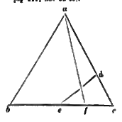

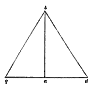
For from the multiplication of half that same perpendicular by bases .bd. and .dg. arise the areas of triangles .abd. and .adg. Wherefore it is proved that triangle .abd. is equal to triangle .adg.
Triangles having one angle equal to one angle have a ratio compounded of the sides containing the equal angles. For the clarity of which, let triangles .abg. and .gez. have equal angles, namely those at .g. I say indeed that triangles .abg. and .gez. have a ratio compounded of these ratios which belong to the sides containing the equal angles, namely of that which side .bg. has to side .ge., and of that which side .ag. has to side .gz.; which is proved thus: let straight line .ae. be joined, and let triangle .age. be placed between triangles .abg. and .gez.; therefore the ratio of triangle .abg. to triangle .gez. will be compounded of two ratios, namely of that which triangle .abg. has to triangle .age., and of the ratio of triangle .age. to triangle .gez. But the ratio of triangle .abg. to triangle .age. is as base .bg. to base .ge., since they are under one altitude; likewise the ratio of triangle .eag. to triangle .egz. is as side .ag. to side .gz.; therefore the ratio of triangle .abg. to triangle .gez. is compounded of the ratios of sides .bg. to .ge. and .ag. to .gz., which was to be shown. The ratio of triangle .abg. to triangle .gez. is also compounded of the ratios .bg. to .gz. and .ag. to .ge., since sides .ag. and .bg. are antecedents, and sides .ge. and .gz. are consequents: and because, as we said in the treatise on angles, a compounded ratio falls from the product of the antecedents to the product of the consequents, the ratio of triangle .abg. to triangle .gez. will indeed be as the product of .bg. by .ag. to the product of .eg. by .gz.: wherefore, if the multiplication of side .eg. by side .gz. is equal to the multiplication of sides .bg. by .ga., triangle .egz. will be equal to triangle .abg.; and if less, less; and if greater, greater; and this I wished to demonstrate.
And if from a triangle a straight line is drawn cutting two sides of the triangle, which with those two sides makes a triangle having one angle in common with the triangle itself, the ratio of one triangle to the other will be as the products of the sides containing that angle. For the clarity of which, let there be triangle .abc.; and in it let line .de. be drawn cutting sides .ca. and .cb. at points .ed. I say that triangle .abc. has the ratio to triangle .dec. as the product of .ac. by .cb. to the product of .dc. by .ce.; which is proved thus: upon side .ac. I will apply triangle .acf. equal to triangle .dec.; and because triangles .abc. and .afc. are under one altitude, as .bc. is to .fc., so is triangle .abc. to triangle .afc. But the ratio of .ac. to .fc. is as the product of .ac. by .cb. to the product of .ac. by .cf.; therefore the ratio of triangle .abc. to triangle .afc. is as the product of .ac. by .bc. to the product of .ac. by .cf. And because triangle .dec. is equal to triangle .acf., the ratio of triangle .acb. to triangle .dce. is as the product of .acb. by .acf.: and because triangles .acf. and .dce. are equal to one another and have one angle in common; wherefore around that angle they suffer reciprocal sides; that is, they are of mutual ratio, as is held in the fifteenth theorem of the sixth book of Euclid: therefore as .ac. is to .dc., so is .ce. to .cf.; wherefore the product of .dc. by .ce. is equal to the product of .ac. by .cf.; therefore the ratio of triangle .abc. to triangle .dec. is as the product of .ac. by .cb. to the product of .dc. by .ce.; which was to be shown. And if on one of the sides there is a given point, from which you wish to draw a straight line dividing the triangle into two equal parts, as in triangle .bgd., in which point .a. is given upon side .gd.; and let the first
Concurrency of Medians & Three-Consort Centroid Division¶
Latin Locus: Preparatoria de Concursu Linearum et Trium Consortum Divisione (pp. 112–120) · Commentary: Notes on Centroid X(2) & Interior Points

point .a. be upon the midpoint of .gd.; I shall join .a. with .b., and triangle .bgd. will be divided into two equal triangles by line .ba., which are .bga. and .bad. upon equal bases and under one altitude; or because the product of .bd. by .dg. is double the product of .bd. by .da., triangle .bgd. is double triangle .bad., since they have one angle in common. But let the given point not be upon the midpoint of any of the sides, as in this other triangle .abg., in which point .d. is given nearer to point .b. I will divide side .bg. into two equal parts at .e., and join straight lines .ad. and .ae.; and through point .e. I will draw line .ez. parallel to line .ad., and join straight line .dz. I say indeed that triangle .abg. is divided into two equal parts by line .dz.; which is proved thus: between the parallels .ad. and .ez., and upon base .ad., triangles .ade. and .adz. are equal to one another: let triangle .abd. be added in common; the two triangles .abd. and .adz., that is quadrilateral .abdz., will be equal to the two triangles .abd. and .ade., that is to triangle .abe. But triangle .abe. is half of triangle .abg.; wherefore quadrilateral .abdz. is also half of triangle .abg.; and the remaining part, namely triangle .zdg., is the other half of triangle .abg.: therefore triangle .abg. has been divided from point .d. by line .dz. into two equal parts, as it was necessary to do. And if you desire to find point .z. according to number, know that what part .ed. is of .dg., the same is .az. of .ag., since in triangle .adg. line .ez. is drawn parallel to side .ad.: wherefore you shall multiply .ed. by .ga., and what comes out you shall divide by .gd., and what issues forth will be .az. For example: let side .ab. be 13, and .bg. 14, and .ga. 15; wherefore .ge. or .eb. is 7: and let .de. be of two perticae; wherefore .gd. will be 9; if, therefore, we multiply .ed. by .ga., namely 2 by 15, there will come 30; which divided by .gd., there will come \(3\frac{1}{3}\) for line .az.; which subtracted from .ag., there remain \(11\frac{2}{3}\) for line .gz.: wherefore if we multiply it by .gd., which is 9, there will come 105, namely half the multiplication of .bg. by .ga.: wherefore it is proved that triangle .zgd. is half of triangle .abg., since to each of them the angle at .g. is common: for the ratio of triangle .abg. to triangle .zdg. is compounded of the two ratios of the sides containing the common angle: that is, of that which .bg. has to .gd., and of that which .ag. has to .gz.: wherefore as the product of the antecedents .bg. by .ga. is to the product of the consequents .dg. by .gz., so is triangle .abg. to triangle .zdg. But the product of .bg. by .ga. is double that of .dg. by .gz. Therefore triangle .abg. is double triangle .zdg. Whence if we multiply .ag. by half .gb., namely 15 by 7, and divide the product by .gd., namely 9, \(11\frac{2}{3}\) will come for line .gz., as we found above.
Preparatory propositions in dividing triangles through a given point within the triangle.
If from two angles of a triangle two straight lines are drawn to the midpoints of the sides subtending them, they will cut one another proportionally, so that each portion between the angle and the intersection is double its remainder: and if from the remaining angle a straight line is drawn to the remaining side through the point of intersection, it will indeed divide that side into two equal parts. In triangle .abg., from angles .abg. and .bag., let straight lines .ae. and .bz. be drawn to the midpoints of sides .ag. and .bg., intersecting one another at point .d. I say that the ratio of .ad. to .de. is as the ratio of .bd. to .dz., and each of them is double its remainder; which is proved thus: from point .a. I will draw straight line .ai. parallel to straight line .bg.; and I will produce straight line .bz. until it meets .ai. at point .i.,
f. 0120 · p. 113
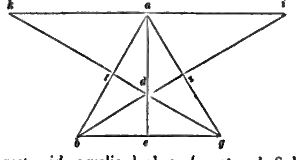

and triangles .azi. and .gzb. will be similar to one another; wherefore as straight line .az. is to .zg., so is .iz. to .zb., and .ia. to .bg. For .az. is equal to .zg.; therefore .zi. will be equal to .zb., and .ia. to .bg. Again, because triangles .adi. and .bde. are similar, as .ia. is to .be., so is .ad. to .de., and .id. to .db. But straight line .bg. is equal to straight line .ia.; wherefore as .bg. is to .be., so is straight line .ad. to .de., and .id. to .db.: for .bg. is double .be.; wherefore .ad. is double .de., and .id. is double .db.: and since .iz. is equal to .zb., if straight line .zd. is joined in common, the whole straight line .id. will be equal to the two .bz. and .zd. But .id. has been shown to be double .db.; wherefore the two straight lines .bz. and .zd. are double straight line .bd.: if straight line .db. is taken away in common, straight line .bd. will remain equal to double straight line .dz.; wherefore .bd. is double .dz.: for straight line .ad. was shown to be double .de.; therefore as .ad. is to .de., so is .bd. to .dz.; which was to be shown. And if from angle .g. through point .d. there passes line .gt., I say that side .ab. is divided into two equal parts at point .t.: I will draw straight line .gt. outside triangle .abg. until it meets line .ik. at point .k., and triangles .adk. and .edg. will be similar to one another; wherefore as .ad. is to .de., so is .ak. to .ge.: but .ad. is double .de.; wherefore straight line .ak. is double straight line .ge., to which straight line .bg. is also double, since .be. is equal to .eg.: things that are double the same are equal to one another; wherefore straight line .ak. is equal to straight line .bg. Again, because triangles .atk. and .btg. are similar, as .ak. is to .bg., so is .at. to .tb.; for .ak. is equal to straight line .bg., and .at. is equal to straight line .tb.: therefore side .ab. has been divided into two equal parts by line .gt.; which was to be shown.
And because in triangle .abg. from angles .abg. and .agb. two straight lines meet upon the midpoints of the sides subtending them, which are straight lines .bz. and .gt. cutting one another at point .d., the ratio of their segments will be one, namely as .bd. is to .dz., so is .gd. to .dt. Again, I say that if from the remaining angle a straight line is drawn to the midpoint of the side subtending it, it will pass through the point of intersection of the other two lines descending from the remaining angles to the midpoints of the remaining bases. For example: let triangle .abg. be drawn again, and upon the midpoints of its bases let points .t.ez. be marked, and let straight lines .ae. and .bz. be joined, cutting one another at point .d. I say indeed that if a straight line is drawn from point .g. to point .t., it will pass through point .d.: and if it is not so, the straight line from .g. to .t. will pass over line .bz. between points .bd., or between points .dz.: let it pass first over straight line .bd. through point .f.; and since the two straight lines .bz. and .gt. descend from angles .abg. and .bga. to the midpoints of sides .ab. and .ag., cutting one another at point .f., .bf. will be double .fz.: but .ad. is double .dz.; therefore as .bf. is to .fz., so is .bd. to .dz.: therefore permuting, as the lesser .bf. is to the greater .bd., so is the greater .bd. to the lesser .dz.;
f. 0121 · p. 114
which is absurd; for the straight line drawn from .g. to .t. will not pass through .bz. between points .bd. Similarly it will be shown that it cannot pass between points .dz.; for it will pass through point .d., as was said. From this, therefore, it is manifest that within triangles there is no point except one, through which from the angles straight lines pass dividing the sides of the triangle into two equal parts. Wherefore if we wish a straight line to pass through that point dividing the triangle into two equal parts, each of the straight lines descending from the angles to the midpoints of its sides will indeed be one by which triangles are divided into equal portions. For example: in the above-written triangle .abg. let point .d. be given, through which pass the straight lines .ae. and .bz. and .gt. drawn from the angles dividing the sides of the triangle itself into equal portions; for each of them divides triangle .abg. into two equal parts: for triangles .aeb. and .aeg. are upon equal bases, which are .be. and .eg., and under one altitude, which is the perpendicular drawn from .a. onto .bg.; wherefore triangle .aeb. is equal to triangle .aeg., and on account of the same things triangles .bzg. and .bza. are equal to one another; and likewise triangles .gat. and .gtb. are equalled to one another. Therefore triangle .abg. is cut into two halves by each of lines .ae. and .bz. and .gt. passing through the given point .d. Similarly, if the given point falls upon line .ae. between .ad. or .de., triangle .abg. will also be divided into two equal parts by line .ae. passing through the given point within the triangle: understand the same if the given point is on the extension of either of the two lines .bz. and .gt. And if the given point does not fall on the lines descending from the angles to the midpoints of its sides: then if from the angles we cause straight lines to pass through that point coming as far as the sides of the triangle, the segments of each side will be unequal to one another; of which two segments greater than half of their sides will be about one of the angles of the triangle, and two lesser about another, and one greater and the other lesser contained the remaining angle. For example: in triangle .dez. let straight lines .da., .eb., .zg. be drawn dividing its sides equally at points .a., .b., .g., and intersecting one another at point .i. And let there be some given point within triangle .dez. which is not on lines .da., .eb., .zg., which must be within one of the six triangles containing the whole triangle .dez.: which triangles are .dib. and .dig. and .die. and .aie. and .aiz. and .zib.: first let point .f. be given within triangle .dib.; and when we draw a line from .d. to .f. and cause it to pierce onto side .ez., it will doubtless come between points .az.; and this will happen because point .f. is within triangle .daz.: therefore it will come upon point .k.; wherefore .zk. is less than half of its side .ez., and .ek. is more. Likewise, if from angle .z. through point .f. we cause a straight line to pierce, it will indeed fall between .dg. upon straight line .de., since point .f. is within triangle .gzd.; wherefore let us place it as falling upon point .c.; therefore .ec. will be more than half of side .de., and .cd. less. Therefore about angle .e. are two greater segments, which are .ke. and .ec. Again, if from angle .dez. we draw through point .f. a straight line falling upon side .zd., it will doubtless fall between .db., since point .f. is within triangle .deb.: therefore let the straight line drawn from .e. through .f. fall upon point .h.; wherefore .zh. will be more, and .hd. will be less than half of side .zd.: wherefore about angle .edz. are two segments lesser than half the sides, which are .cd. and .dh.; and angle .dze. remains contained by unequal segments, namely by one greater and the other lesser than half their sides; of which the greater segment is .hz., and the lesser segment is .zk. Similarly if the given
f. 0122 · p. 115
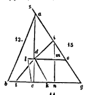
point .f. lies within any of the five remaining triangles, you will find these same things happen.
And if some point is given within a triangle which does not lie on the lines descending from the angles to the midpoints of its sides, and you wish to divide it into two equal parts with a line passing through that point, you shall strive through those things which have been said to find the angle contained by the unequal segments; because around it the things that follow will have to be performed. For example: let there be triangle .abg., in which point .d. is given, which is not on any of the straight lines descending from the angles to the midpoints of its bases; and we wish to divide triangle .abg. into two halves with a line passing through point .d. First let the incidences of the lines descending from the angles through point .d. upon the sides be observed by the eye, so that knowledge may be had of the angle contained by the unequal segments, which let be the angle at .g., and let a line be drawn from point .d. onto the remaining side parallel to one of the sides containing it, which let be straight line .de.; and let there be applied to it a rectangle equal to half of the rectangle .bg. by .ag., which let be the rectangle .de. by .gz., that is, let half of the multiplication of .bg. by .ag. be divided by .de., and .gz. will come forth. Then to line .gz. you shall apply a parallelogram deficient by a square figure, which shall be equal to the rectangle .ge. by .gz.; and this is that .gz. be divided into two parts, one of which multiplied by the other makes an amount equal to the multiplication of .ge. by .gz.: which cannot happen otherwise unless the square of half of line .gz. exceeds the rectangle .ge. by .gz., or is equal to it: let .zi. by .ig. be made as .ge. by .gz.; and let straight line .id. be joined, and sent out to point .t. I say indeed that triangle .abg. is divided into two equal parts by line .it. passing through point .d.; which is proved thus: since the multiplication of .zg. by .eg. is equal to the multiplication of .zi. by .ig., as .zg. is to .zi., so will .ig. be to .eg.; wherefore as .zg. is to its other part, namely to .ig., so will .ig. be to its other part, namely to .ie.: but as .gi. is to .ie., so is .gt. to .de.; therefore as .zg. is to .ig., so is .gt. to .de.: wherefore the multiplication of .ig. by .gt. is equal to the multiplication of .zg. by .de.; but the multiplication of .zg. by .de. is half the multiplication of .ag. by .gb.; therefore .ig. by .gt. is also half the multiplication of .ag. by .bg.; wherefore triangle .itg. is half of triangle .abg., as we said before. And that we may show these things with numbers: let side .ab. be 13, and .ag. 15, and .bg. 14; and let perpendicular .ac. be drawn in it, which will be 12. The fall .bc. will be 5, and .cg. will be 9; and let point .d. be between perpendicular .ac. and side .ag.; and let it be distant from line .cg. according to the quantity of perpendicular .dk., which let be 3; and let line .ed. be drawn onto point .l.; and let .dl. be an eighth and a sixteenth part of one: and because line .dl. is parallel to line .ck., and .dk. to straight line .lc., .lc. will be equal to .dk. and .dl. to straight line .kc.; therefore .lc. is 3, and .kc. is \(\frac{3}{16}\); there will remain 9 for .al.: and because in triangle .acg. line .le. is drawn parallel to line .cg., as .al. is to .ac., so will .le. be to .cg.; wherefore .le. will be \(6\frac{3}{4}\); from which if .ld., namely \(\frac{3}{16}\), be taken away, there will remain \(6\frac{9}{16}\): into which number if we divide the product of .ag. by half of .bg., namely 105, there will come 16 for line .gz. Likewise, because as .al. is to .ac., so is .ae. to .ag.; .ae. will therefore be \(11\frac{1}{4}\), and there will remain \(3\frac{3}{4}\) for .eg., namely a fourth part of line .ga.: into which if we multiply line .gz., there will come 60: therefore line .gz., namely 16, must be divided into two parts, one of which multiplied by the other will make 60. And that this may be done, subtract 60 from the square of half of line .gz., and there will remain 4; whose root, namely 2, must be added upon half of line
f. 0123 · p. 116
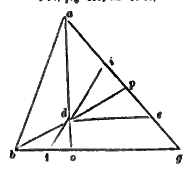
.gz.; and thus 10 will be had for line .gi., and 6 will remain for line .iz.: then if we divide 105 by .gi., the aforesaid \(10\frac{1}{2}\) will come for line .gt. I will show otherwise that line .gt. is \(10\frac{1}{2}\): I will draw from point .i. perpendicular .imn. upon line .gb.; and line .in. will be parallel to line .ac.; wherefore as .gi. is to .ga., that is as 10 is to 15, so is .in. to .ac.; wherefore .in. will be 8; and because quadrilateral .mk. is a parallelogram, line .mn. will be equal to line .dk.; wherefore .mn. is 3, and .im. remains 5. Again, because straight line .in. is parallel to straight line .ac., as .gi. is to .ga., so is .gn. to .gc.; wherefore .gn. is 6; therefore 3 remain for line .nc.; since straight line .ml. is equal to it, straight line .ml. will likewise be 3; from which if .dl., namely \(\frac{3}{16}\), be subtracted, there will remain \(2\frac{13}{16}\) for line .md.: and because triangles .imd. and .dkt. are right-angled and similar to one another, as .im. is to .md., that is as 5 is to \(2\frac{13}{16}\), so is .dk., namely 3, to line .kt.: wherefore if we multiply \(2\frac{13}{16}\) by 3, and divide what comes out by 5, there will come \(1\frac{11}{16}\) for line .kt.; from which if we subtract .kc., namely \(\frac{3}{16}\), there will remain \(1\frac{1}{2}\) for line .ct.; to which if we add line .cg., which is 9, we shall indeed have \(10\frac{1}{2}\) for line .gt., as we said before. Again I will show by number that, if in the same triangle we draw lines .ao. and .bp. passing through point .d., the portion .gp. is less than half of its side, and .go. is greater. Since in triangle .aog. straight line .de. is drawn parallel to straight line .og., as .ae. is to .ag., so will .de. be to .og.; therefore as 3 is to 4, so is .de., namely \(6\frac{9}{16}\), to .og.; wherefore if we multiply 4 by \(6\frac{9}{16}\) and divide the sum by 3, there will come \(8\frac{3}{4}\) for line .go. Again, because in triangle .pbg. straight line .de. is drawn parallel to straight line .bg., as .bg. is to .de., so is .gp. to .pe.: whence as the excess of .bg. over .de., so will .ge. be to .ep.; therefore as \(7\frac{7}{16}\) is to \(6\frac{9}{16}\), that is as 119 is to 105, or as 17 is to 15, so is .ge., namely \(3\frac{3}{4}\), to .ep.; wherefore if we multiply 15 by \(3\frac{3}{4}\) and divide by 17, there will come \(3\frac{21}{68}\) for line .ep.; wherefore the whole .gp. will be less than \(7\frac{1}{2}\), which is half of the whole line .ga. And it should be noted that always through the line subtending the angle contained by the unequal segments there can pass a line dividing the triangle into two equal parts; and sometimes a line passing through the given point will be able to subtend the angle contained by the greater segments, which will also divide the triangle into two equal parts; and never will a straight line pass through the given point dividing the triangle into two equal parts which subtends the angle contained by the lesser segments.
Therefore triangle .abg. has been divided into two equal parts by line .it. passing through the given point .t., and one of its portions is quadrilateral .abti.; and the other is triangle .itg.; which it was necessary to do.
Demonstration of how a triangle is divided into two equal parts by a line going out from a given point outside it.
If you wish to divide triangle .abg. into two equal parts by a line going out from a given point .d. outside it, draw line .ad. cutting side .bg. at .e.; indeed if straight line .be. is equal to straight line .eg., what was proposed will be done; because .abe. and .aeg. are upon equal bases and under the same altitude; whence triangle .abe. lies equal to triangle .aeg. But let .be. not be equal to straight line .eg.; one of them will indeed be greater; and let straight line .be. be greater; from point .d. let straight line .zd. be drawn parallel to .be.; and
f. 0124 · p. 117

let straight line .ab. be produced to .z.. And because straight line .be. is greater than half of side .bg., the rectangular surface .ab. by .be. is more than half of the rectangular surface .ab. by .bg.; much more is the rectangle .ab. by .zd. more than half of the rectangle .ab. by .bg., since .zd. is greater than .be. Let the rectangle .ib. by .zd. be laid down equal to half of the rectangle made from .ab. by .bg.; and since the rectangle .ab. by .be. is greater than the rectangle .ib. by .zd., the ratio of .zd. to .be. will be less than the ratio of .ba. to .bi. But the ratio of .zd. to .be. is equal to the ratio of .za. to .ab. By division, indeed, the ratio of .zb. to .ba. will be less than the ratio of .ai. to .ib.; wherefore the rectangle .zb. by .bi. is less than the rectangle .ba. by .ai.: let there be adjoined to straight line .bi. a parallelogram exceeding by a square figure equal to the rectangle .zb. by .bi.; that is, let some line be adjoined to straight line .bi., which multiplied by itself and by .bi. makes an amount equal to the multiplication of .zb. by .bi.; let which parallelogram be the rectangle .kb. by .bt.; and let straight line .tkd. be joined; and because the rectangle .zb. by .bi. is equal to the rectangle .bt. by .ti., proportionally it will be as .zb. to .bt., so .ti. to .ib.; by composition, therefore, as .zt. is to .bt., so is .bt. to .bi. But as .zt. is to .bt., so is .zd. to .bk.; therefore as .zd. is to .bk., so is .bt. to .bi.; wherefore the rectangle .kb. by .bt. is equal to the rectangle .zd. by .bi. But the rectangle .zd. by .bi. is equal to half of the rectangle .ab. by .bg.; wherefore triangle .tbk. is half of triangle .abg. Therefore triangle .abg. has been divided by a line going out from point .d., which is straight line .dkt., into two halves, one of which is triangle .tbk., and the other is quadrilateral .tkga.; which it was necessary to do. Which things I will also work with numbers. Let side .ab. be 13, and .ag. 15, and .bg. 14, and .dz. \(10\frac{2}{5}\), and .bz. \(1\frac{3}{7}\); and I will divide half of the rectangle .ab. by .bg., namely 91, by .zd., that is by \(10\frac{2}{5}\); and there will come \(8\frac{3}{4}\) for line .bi.: and I will multiply .zb. by .bi., namely \(1\frac{3}{7}\) by \(8\frac{3}{4}\), and there will come \(12\frac{1}{2}\); to which I will add the square of half of line .bi., namely the multiplication of \(4\frac{3}{8}\) by itself; which multiplication is \(19\frac{11}{64}\), and there will be \(31\frac{41}{64}\); whose root, which is \(5\frac{5}{8}\), is line .lt.; to which if .lb. be added, which is \(4\frac{3}{8}\), 10 will be had for line .tb.: and because as .zt. is to .bt., so is .zd. to .bk.; I will multiply .zd. by .bt., namely \(10\frac{2}{5}\) by 10, and there will be 104; which I will divide by \(11\frac{3}{7}\), that is by line .zt., and there will come \(9\frac{1}{10}\) for line .bk.; or 91, which is half of the rectangle .ab. by .bg.; I will divide by .bt., that is by 10, and there will likewise issue forth \(9\frac{1}{10}\) for line .bk.; and thus triangle .btk. will be half of triangle .abg., as is fitting.
And if one of the sides of the triangle is produced outside the triangle, and upon that extension falls the point from which a straight line ought to go out dividing the triangle into two equal parts; as if in triangle .abg. side .ab. be drawn out beyond the triangle upon point .z.; and let .z. be the given point from which a straight line ought to go out dividing triangle .abg. into two equal parts; in the same aforesaid way from point .z. I will produce straight line .ze. parallel to straight line .bg.; and I will draw out side .ag. to point .e.; and I will place the rectangle .ze. by .gi. equal to half of the rectangle .ag. by .gb.; and I will apply to straight line .gi. a parallelogram which a square exceeds equal to that which is made from .eg. by .gi.; and let it be .gt. by .ti.; and I will join .tlz. I say that triangle .abg. is divided into two equal parts by line .tz. going out from point .z., and one of its parts is triangle .tgl., and the other is quadrilateral .tabl. Which is proved thus: Since the rectangle .gt. by .ti. is equal to the rectangle .eg. by .gi., as .eg. is to .gt., so is .ti. to .ig.: by composition, therefore, as the whole .et. is to .tg., so is the whole .tg. to .ig. But as .et. is to .tg., so is .ez. to .gl.: by equality, therefore, as .ze. is to .lg., so is straight line .gt. to straight line .ig.; wherefore the rectangle .lg. by .gt. is equal to the rectangle
Dividing a Triangle Parallel to Its Base¶
Latin Locus: Divisio Trigoni per Lineam Equidistantem Basi (p. 119) · Commentary: Notes on Quadratic Scaling & Trapezoids

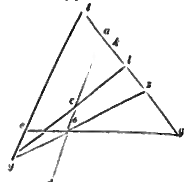
.ze. by .ig. But the rectangle .ze. by .ig. is half of the rectangle .ag. by .bg.; wherefore also the rectangle .lg. by .gt. is half of the rectangle .ag. by .bg.; therefore the rectangle .ag. by .gb. is double the rectangle .tg. by .gl. Therefore triangle .abg. is double triangle .tgl.; wherefore triangle .tgl. is half of triangle .abg., as is fitting. Let these things also be demonstrated in numbers.
Again let side .ab. be 13, and side .ag. 15; base .bg. also 14; and let .bz. be a fourth part of .ab.; wherefore .eg. will also be \(3\frac{1}{4}\), namely a fourth of .ag.; wherefore .ze. adds a fourth part upon .bg.; and thus .ze. will be \(17\frac{1}{2}\) perticae: into which if we divide half of the product of .ab. by .bg., namely 105, there will come 6 for line .gi.; to which if we apply the rectangle .gt. by .ti. equal to that which is from .eg. by .gi., the rectangle .gt. by .ti. will indeed be \(22\frac{1}{2}\): and that we may have knowledge of the quantity of line .ti., I will divide .ig. at point .h. into two equal parts, and .ih. will be 3: and because line .ig. is divided into two equal parts at point .h., and line .it. is joined to it in a straight line, the multiplication of .it. by .gt. together with the square of line .ih., which is 9, will be equal to the square of line .th.; wherefore .th. is the root of \(31\frac{1}{2}\); to which if .hg., which is 3, be added, the whole .tg. will be the root of \(31\frac{1}{2}\) and 3; wherefore .tg. is a binomial: and because, as has been demonstrated, the product of .lg. by .gt. is equal to that which is from .ze. by .ig., which is 105, 105 must be divided by line .gt., namely by the binomial whose names are the root of \(31\frac{1}{2}\) and 3. Which division, how it is done, I will show; because line .tg. is a binomial, the apotome of that binomial will indeed be line .ti., which is the root of \(31\frac{1}{2}\) minus 3; since .hi., which is 3, is taken away from .th., which is the root of \(31\frac{1}{2}\).; and because from the binomial .tg. by the apotome .ti. there comes forth a rational number, namely \(22\frac{1}{2}\); if we divide \(22\frac{1}{2}\) by the binomial .gt., there will indeed come the apotome .ti.; therefore as many times as \(22\frac{1}{2}\) is in 105, so many times the equal of the apotome .ti. will come from the division of 105 by the binomial .tg.; whence 105 must be divided by \(22\frac{1}{2}\), that is 210 by 45, and there will come \(4\frac{2}{3}\); by which if we multiply the apotome .ti., we shall have the quantity of line .gl.; which multiplication is done thus: from the multiplication of \(4\frac{2}{3}\) by line .ti., namely by the root of \(31\frac{1}{2}\), there will come four roots and two thirds of \(31\frac{1}{2}\), which are one root of 686, which comes from the multiplication of the square of \(4\frac{2}{3}\) by \(31\frac{1}{2}\); from which root must be taken away the multiplication of \(4\frac{2}{3}\) by line .ih., which is 14; and thus there will be had for line .gl. the root of 686 minus 14, which by approximation is a little less than \(12\frac{1}{5}\), and likewise the binomial .gt. by approximation is \(8\frac{11}{18}\): which multiplied by \(12\frac{1}{5}\), namely .tg. by .gl., will come to about 105, as is fitting. And thus must one proceed when we wish to divide any irrational number by any binomial. And it should be noted that if it were necessary to divide 105 by the apotome .it., the same way would have to be held; and from that division there would come out a binomial whose names would be the root of 686 and 14; and thus strive to work in similar cases. But let two sides of the triangle be drawn out outside the triangle containing one of the angles of the triangle; and let the given point fall within the lines containing the exterior angle, which is equal to the interior angle; and we wish to draw a straight line from that point dividing the triangle into two equal parts. As if of triangle .abg. the two sides .ab. and .bg. be produced at points .de.; and within angle .ebd. point .i. be given, from which a straight line goes out dividing triangle .abg. into two equal parts, first I will join .ib., and draw line .ib. to point .z. falling upon line .ag. If, therefore, .az. is equal to .zg., triangle .abg. is divided into two equal parts by line .iz. But if they are unequal, one of them will be greater, which let be .az.; indeed I will draw out .za. outside triangle .abg. upon point .t.; and from point .i. I will draw line .it. parallel to line
f. 0126 · p. 119
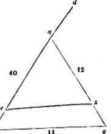

.ba.; and because .za. is greater than half of side .ag., the rectangle .ab. by .az. will be greater than half of the rectangle .ba. by .ag. Whence let .lt. by .ak. be laid down equal to half of the rectangle .ba. by .ag.; and let the rectangle .al. by .kl. be taken equal to the rectangle .ta. by .ak., and let straight line .li. be joined; and it will be shown through those things which were said above that triangle .abg. is divided into two equal parts by line .il.; and one section of them is triangle .lac., and the other is quadrilateral .lcbg.
And if you wish to divide any triangle by a line parallel to one of the sides of the triangle, how this ought to be done will be demonstrated in the following triangle .abg., which must be divided into two equal parts by a line parallel to base .bg. Indeed let side .ba. be sent out outside the triangle to point .d.; and let .ad. be equal to half of side .ba.; and of lines .ba. and .ad. let the mean proportional .ae. be taken, that is, that as .ba. is to .ea., so is .ea. to .ad.; and through point .e. let straight line .ez. be drawn parallel to base .bg. I say indeed that triangle .abg. is divided into two equal parts by line .ez., of which one is triangle .aez., and the other is quadrilateral .ebgz.; which is proved thus: triangles .aez. and .abg. are similar to one another, since angles .aez. and .aze. are equal to the two angles .abg. and .agb., namely the exterior to the interior; and angle .bag. is common to each. But similar triangles are to one another in the duplicate ratio of homologous sides, that is of similar sides; wherefore as .ba. is to .ad., so is triangle .abg. to triangle .aez.: for .ba. is double .ad.; wherefore triangle .abg. is double triangle .aez.: therefore half of triangle .abg. is triangle .aez., or otherwise; since when three straight lines are proportional in continuous proportion, as the first is to the third, so is the space described from the first to that which is similar and similarly described from the second. Whence, as was said, as .ba. the first is to .ad. the third, so is that from .ab. to that from .ae. double, that is, that from .ab. to that from .ae.; therefore triangle .abg. is double triangle .aez., as I said before. Otherwise, because as .ba. is to .ae., so is .ae. to .ad., the product of .ba. by .ad. will be equal to the square which is from straight line .ae.: wherefore the square of straight line .ab. is double the square which is from straight line .ae.; and because .bg. is parallel to .ez., proportionally as .ba. is to .ae., so is .ga. to .az.; wherefore as the square which is from straight line .ba. is to the square which is from straight line .ae., so is the square which is from straight line .ga. to that which is from straight line .az.; the square of straight line .ba. is double the square of straight line .ae. Wherefore the square of straight line .ga. will be double that which is from straight line .az.; wherefore the product of .ba. by .ag. is double the product of .ea. by .az.; wherefore triangle .abg. is double triangle .aez. And if you wish to do this according to number, let side .ab. be 10; side .ag. also 12; and side .bg. 14: indeed I will multiply .ab. by half of itself, namely 10 by 5, and there will be 50, whose root is .ae.: and again I will lead .ga. by half of itself, and 72 will be had; whose root is line .az.: and I will draw line .ez., and triangle .aez. will be half of triangle .abg., since they are about one angle; and the multiplication of .ea. by .az. becomes half of .ba. by .ag.: indeed the multiplication of .ea. by .az., namely of the root of 50 by the root of 72, makes the root of 3600, namely 60, which is half of .ba. by .ag., namely of 120: and if you wish to have knowledge of straight line .ez., you shall multiply .bg. by half of itself, and 98 will come for the square of line .ez.; and thus strive to do in similar cases.
Here begins the division of triangles into three parts.
If you wish to divide triangle .abg. into three equal parts upon one of its sides,
f. 0127 · p. 120

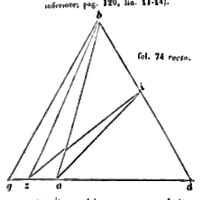

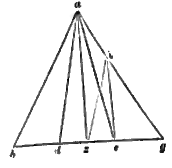

let us say upon side .bg., divide .bg. itself into three equal parts, which are .bd., .de., .eg.; and let straight lines .ad. and .ae. be joined. I say indeed that triangle .abg. is divided into three equal parts, which are triangles .abd. and .ade. and .aeg.: for they are upon equal bases and under one altitude; wherefore it is necessary that they be equal to one another. And if upon a given point .z. I wish a third part from triangle .bgd., I will join .bz.; and if .gz. is a third part of .gd., triangle .bgz. will indeed be a third part of triangle .bgd.; but if .gz. is not a third part of .gd., it will then be more or less. First let it be less; wherefore I will take from .gd. a third part, which let be .ga.; and I will join straight line .ai. parallel to .zb.; and I will join straight line .iz., which takes away from triangle .bgd. quadrilateral .ibgz.; which I will demonstrate to be a third of the whole triangle .bgd.; for example: because straight line .ga. is a third part of the whole .gd., triangle .bga. will be a third part of the whole triangle .bgd. And because triangles .bza. and .bzi. are between parallels .bz. and .ai., and upon the same base .bz., they are equal to one another; let triangle .bgz. be added in common; quadrilateral .ibgz. will be equal to triangle .bga.; therefore quadrilateral .ibgz. is a third part of triangle .bgd.: and the remainder, namely triangle .izb., shall be divided into two equal parts by any of the ways said above.
Again, let triangle .abg. be laid down divided into three equal parts, which let be triangles .abd. and .ade. and .aeg.; wherefore the segments .bd., .de., .eg. are equal to one another; in the figure above we placed point .z. between .bd.; which would be the same if we had placed it between .eg., since it would have to be worked in the same way. Now let us place point .z. between .de. upon side .bg.; from which we wish to produce a line cutting off a third part of triangle .abg.: first indeed let .az. be joined; and through point .d., or through point .e., let a line be drawn parallel to line .az., which let be line .ei.; and let .zi. be joined. I say indeed that straight line .zi. cuts off from triangle .abg. a third part, which is triangle .izg.; which is proved thus: because triangles .azi. and .aze. are between two parallels and upon the same base, they are equal to one another; if triangle .ade. is added in common, trapezoid .adzi. will be equal to triangle .ade. But triangle .ade. is a third part of triangle .abg.; wherefore quadrilateral .adzi. is likewise a third part of triangle .abg.; and triangle .abd. is another third part of triangle .abg.; there remains for the remaining third part triangle .izg., which has been cut off from triangle .abg. by straight line .iz.; which it was necessary to do.
Let triangle .abg. again be laid down, which must be divided among three co-heirs, each of whom wishes to have in his portion one of the sides of triangle .abg. Indeed I will divide side .bg. into two equal parts at point .d.; and I will join straight line .ad., and I will lay off .dc. a third part of line .ad.; and I will join straight lines .bc. and .cg. I say indeed that triangle .abg. is divided into three equal parts, each of which is upon one of the sides of triangle .abg.; which parts are triangles .abc. and .acg. and .bcg.; which is proved thus: because straight line .dc. is a third part of straight line .da., .ac. will be double .cd.; wherefore triangle .abc. is double triangle .bcd.; on account of the same things, therefore, triangle .acg. is also double triangle .gcd. Again, because line .bd. is equal to line .dg., triangles .cbd. and .cdg. are equal to one another; wherefore whole triangle .cbg. is double each of triangles .cbd. and .cdg.; and things double the same are equal to one another; wherefore triangles .acb., .acg., and .bcg. are equal to one another. Therefore triangle .abg. is divided, etc.
f. 0128 · p. 121
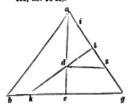

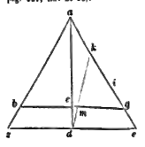
Demonstration of how a given part is cut off from a triangle by a line drawn through a given point within the triangle.
Let triangle .abg. indeed be laid down, and in it let a point .d. be given at random, through which I wish a straight line to pass cutting off a given part, say a third, from triangle .abg.: indeed I will draw line .ae. through point .d., and I will consider whether segment .be. or .eg. is a third part of side .bg.; because if .be. is a third part of straight line .bg., then triangle .abe. will be a third part of triangle .abg. But if neither of them is a third part of side .bg., I will consider what I have said upon each of the lines going out from the remaining angles and coming upon the remaining sides through point .d.: and if I do not find any of the segments of the sides to be a third of its side, I will draw from point .d. line .dz. parallel to line .ge., and I will place the rectangle .dz. by .zi. equal to a third part of the rectangle .ag. by .bg., and I will apply to line .gi. an equiangular rectangle, from which a square figure is deficient equal to the rectangle .gz. by .zi., which let be the rectangle .it. by .tg.; and I will join straight line .td., and produce it to .k. I say indeed that from triangle .abg. a third part has been cut off, namely triangle .tkg., by line .tk. passing through point .d.; which is proved thus: because the product of .gi. by .gz. is equal to the product of .it. by .tg., as .gi. is to .it., so will .tg. be to .gz.: therefore permuting, as .ig. is to .gt., so is .gt. to .zt. But as .gt. is to .zt., so is .kg. to .dz.; therefore as .kg. is to .dz., so is .gi. to .tg.; wherefore the product of .tg. by .gk. is equal to the product of .dz. by .zi. But the product of .dz. by .gi. is a third part of the product of .ag. by .gb.; wherefore the rectangle .tg. by .gk. is also a third part of the rectangle .ag. by .gb.; wherefore triangle .tkg. is a third part of triangle .agb., as has been said.
Demonstration of how a given part is cut off from a given triangle by a line going out from a given point outside the triangle.
Let there be triangle .abg., and outside it let point .d. be given; and it is necessary that from triangle .abg. a given part be cut off, say a third, by a line going out from point .d.; first I will join straight line .ad. cutting side .bg. at point .c.; and if .bc. or .cg. is a third part of line .bg., doubtless a third part of triangle .abg. has been cut off by line .ad. ascending from point .d.: and if it is not so, I will draw out sides .ab. and .ag. outside triangle .abg. at points .ez., and through point .d. I will draw line .ez. parallel to side .bg., and I will place the rectangle .de. by .gi. equal to a third part of the rectangle .ag. by .gb., and I will apply to straight line .gi. a parallelogram which a square figure exceeds equal to that which is made from .eg. by .gi.: and let it be the rectangle .ik. by .kg.; and through point .k. I will draw straight line .kmd. I say that triangle .kmg. is a third of triangle .abg.; which is proved thus: since the rectangle .eg. by .gi. is equal to the rectangle .gk. by .ki., as .eg. is to .gk., so is .ki. to .ig.: by composition, therefore, as .ek. is to .gk., so is .gk. to .ki. But as .ek. is to .gk., so is .de. to .gm.; therefore as .ed. is to .gm., so is .gk. to .gi.: therefore the rectangle .gk. by .gm. is equal to the rectangle .de. by .gi. But the rectangle .de. by .gi. is a third part of the rectangle .ag. by .gb.; wherefore the rectangle .gk. by .gm. is also a third part of the rectangle .ag. by .gb.: and because as the rectangle .kg. by .gm. is to the rectangle .ag. by .gb., so is triangle .kgm. to triangle .agb.: therefore triangle .kgm. is a third part of triangle .abg., as I said before. Similarly, and in the same way, we could cut off from any triangle whatever any given part whatever by a line going out from a given point upon the extension of its side outside it, or within the extension of two sides containing
f. 0129 · p. 122

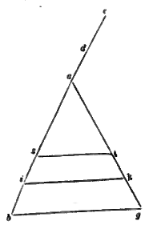

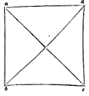
the angle from the sides of the triangle. Again, if within triangle .abg. two points .de. are given, and we wish to divide triangle .abg. into three equal parts by straight lines passing through points .de., first we shall cut off from triangle .abg. triangle .zig. by line .zi. passing through point .d., containing two thirds of triangle .abg.; quadrilateral .zabi. will remain for a third part of triangle .abg.: then we shall divide triangle .izg. into two halves by line .tk. passing through point .e.; and one portion of them will be quadrilateral .tzik., and the other will be triangle .tkg.: and in the same way you shall proceed if the given points are outside the triangle.
And if we wish to divide triangle .abg. by straight lines parallel to base .bg., I will produce side .ba. according to the quantity of a third part of itself to point .d.; and in a straight line with it let straight line .de. lie equal to straight line .da., and the whole .ae. will be the quantity of two thirds of line .ba.: and I will place line .az. as a mean between .ba. and .ad.: again, between .ba. and .ae. in mean proportion I will place straight line .ai.; and through points .zi. I will draw straight lines .zt., .ik. parallel to base .bg. I say that triangle .abg. is divided into three equal parts, of which one is triangle .azt., another is quadrilateral .zikt., and the third will be quadrilateral .ibgk.; which is proved thus: because as .ba. is to .az., so is .az. to .ad., as .ba. is to .ad., so will triangle .abg. be to .azt., since those triangles are similar to one another: for .ba. is triple .ad.; wherefore triangle .abg. is also triple triangle .azt.. Therefore triangle .azt. is a third part of triangle .abg. Again, because as .ba. is to .ia., so is .ai. to .ae., as .ba. is to .ae., so will the triangle which is from .ea. be to that which is from .ai., similar and similarly described; for triangles .aik. and .abg. are similar to one another, described upon sides .ai. and .ab.; wherefore as .ea. is to .ab., that is as 2 is to 3, so is triangle .aik. to triangle .abg.: therefore triangle .aik. is two thirds of triangle .abg.; from which if triangle .azt. be taken away, which is a third part of triangle .abg., quadrilateral .zikt. will remain a third part of triangle .abg.: and the remaining similar quadrilateral .ibgk. will be the other third part: therefore triangle .abg. has been divided into three equal parts; which it was necessary to do. And thus through the demonstrated ways all kinds of triangles can be divided into four parts or more. Whence let us come to the division of quadrilaterals.
Divisions of Quadrilaterals, Trapezoids, Polygons & Circles¶
Latin Locus: De Divisione Quadrilaterorum, Trapeziorum, Multilaterorum et Circulorum (pp. 122–148) · Commentary: Notes on the RMS Trapezoid Invariant
f. 0129 · p. 122
Here begins the division of quadrilaterals.
Now the kinds of quadrilaterals are three: namely parallelograms, truncated-head figures, and irregular quadrilaterals. Parallelograms are those whose opposite sides and opposite angles are equal to one another, of which there are four species: in the first are squares, which have all sides equal and right angles; in the second are rectangles, which have only opposite sides equal to one another and have all right angles; in the third also are rhombi, which consist of four equal sides, yet have unequal angles. In the fourth are rhomboids, which have only their opposite sides and opposite angles equal to one another; and because there is one way of dividing these four species of parallelograms, I have arranged to label all their figures with the same letters, so that what we say of one of them may be seen to hold for the rest. Let there be set before us a square, a rectangle, a rhombus, and a rhomboid .abcd., each of which must be divided into two equal parts; since the quadrilaterals .abcd. are parallelograms, their diameters cut them equally; wherefore if we draw the diameter .ac. or .bd., as is seen in the first figure, they will indeed be divided into two equal parts by either of their diameters.
f. 0130 · p. 123
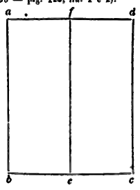


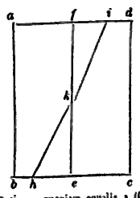

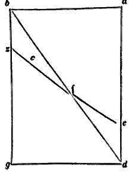
For example: if we draw the diameter .ac., triangle .abc. will be equal to triangle .acd., because side .ad. is equal to side .bc., and side .ab. is equal to side .dc.; also the base .ac. is common to both triangles. And if you wish to begin the division upon some one of the sides, cut that side into two equal parts, and through the point of division draw a straight line to the opposite side parallel to the remaining sides, as is clear in the second figure, in which point .e. is marked at the midpoint of side .bc., and from it is drawn straight line .ef. parallel to the straight lines .ba. and .cd.; and thus the whole quadrilateral .ac. is divided into two equal parallelograms, which are .ae. and .fc.: for they are upon equal bases .be. and .ec., and between the same parallels .ad. and .bc. Similarly, if we draw the line .gk. parallel to the straight lines .ad. and .bc. and dividing the sides at the midpoint of the sides .ab. and .cd., each of the aforesaid parallelograms will indeed be divided into two equal parts by the line .gk., as is shown in the third figure: for the parallelograms .gd. and .bk. are equal to one another, since they are upon equal bases .cg. and .gb. between the same parallels .cd. and .ab. And if a point be given upon any of the sides, as in the fourth figure, in which point .h. is given falling between points .be., you will mark opposite to it point .i. falling between .fd., and let .fi. lie equal to straight line .eh., and let straight line .hi. be joined. I say indeed that each of the four quadrilaterals is divided into two equal parts by line .ih.; which is proved thus: since straight lines .fe. and .ih. fall upon the parallels .ad. and .bc., angle .ifk. will be equal to angle .keh., and also angle .fik. to angle .khe., and the angles at .k. are equal to one another, and base .fi. is equal to base .eh.: therefore triangle .fki. is equal to triangle .khe.: if pentagon .kfabh. be added in common, quadrilateral .iabh. will be equal to quadrilateral .abef., which is half of the whole quadrilateral .ac. Or otherwise, because .ae., .fc., and .ic. are parallelograms between the same parallels .ad. and .bc., they have their opposite sides equal; wherefore side .af. is equal to side .be., and .fd. to .ec. But .fd. is half of .ad.; wherefore .fd. is equal to straight line .af.; therefore .af. is also equal to straight line .ec., and .fi. is equal to straight line .he.: therefore the whole .ai. is equal to the whole .ch., and straight line .di. is equal to straight line .bh., and side .hi. is common: therefore the whole quadrilateral .iabh. is equal to quadrilateral .ihcd., as we have said. Similarly, if the given point should fall between .ec., by as much as it is distant from .e. toward .c., so much you would take from straight line .fa., beginning from .f.; and thus according to this you can divide all parallelograms from a given point upon any of the sides.
And if you desire to cut some parallelogram into two equal parts by a line drawn from a given point within it, as parallelogram .ag., within which a point .c. is given, through which we wish a line to pass dividing parallelogram .ag. into two equal parts, upon the midpoint of diameter .bd. place point .f., and join .cf., and draw it out in either direction to points .ez. I say that parallelogram .ag. is divided into two equal sections, of which one is quadrilateral .eabz., and the other quadrilateral .edgz.; which is proved thus: since two straight lines .ez. and .db. fall upon the parallels .ad. and .bg., angle .fde. will be equal to angle .fbz., and angle .fed. to angle .fzb., and also the angles at .f. are equal to one another; therefore triangles .fed. and .fbz. are equiangular: and since straight line .fb. is equal to straight line .fd., straight line .de. will also be equal to straight line .bz., and triangle .dfe. will be equal to triangle .bfz.; let quadrilateral .dfzg. be taken in common, and quadrilateral .ezgd. will be equal to triangle .bgd.; but triangle .bgd. is half of parallelogram .ag.;
f. 0131 · p. 124
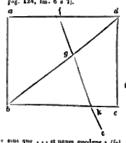

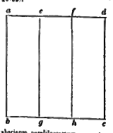


wherefore quadrilateral .ezgd. is half of parallelogram .ag., as I said before: in this same way are divided all parallelograms by a straight line drawn from a given point upon one of its sides: for example, if the given point were .e., it would indeed divide straight line .db. into two equal parts at point .f.; and through that point would be drawn line .ez., which would divide parallelogram .ag. into two equal parts, as was proved. And if you wish to cut some parallelogram into two equal parts by a line issuing from a given point outside it, such as parallelogram .ac., outside which point .e. is given, I shall again draw diameter .bd., and divide it at point .g., and join straight line .eg., and produce it to point .f.: parallelogram .ac. is divided into two equal parts by the line issuing from the given point .e.; which is proved by the figure written above; and one of its halves is quadrilateral .fabk., and the other is quadrilateral .fkcd., as is clear in the figure itself.
Here begins the division of parallelograms into several parts.
Let there be set before us the aforesaid four species of parallelograms .abcd., and we wish to divide any one of them into three equal parts upon two given sides of it, which are .ad. and .bc.; and I shall divide side .ad. into three equal parts, which are .ae., .ef., and .fd., and through points .ef. I shall draw straight lines .eg. and .fh. parallel to sides .ab. and .dc. I say that whichever you wish of the aforesaid four parallelograms is divided into three equal sections by straight lines .eg. and .fh.; which is proved thus. Since straight lines .ad. and .bc. are parallel, and with them are joined the parallel straight lines .ab., .eg., .fh., and .de., they will be equal to one another; wherefore quadrilaterals .ag., .eh., and .fc. are parallelograms, and they have bases equal to one another, which are .bg., .gh., and .hc.: for each of them is a third part of side .bc.; wherefore each of those parallelograms is a third part of the whole parallelogram .ac., as is clear in the first figure. And if you wish to draw a straight line from some given point upon one of the sides, which cuts off a third part from the given parallelogram, and we place the given point upon side .ad.; first having divided side .ad. at points .ef. in the aforesaid order, namely so that each of the sections .ag., .eh., and .fe. be a third part of the whole .ad., and the given point be .e.; I shall draw straight line .eg., and parallelogram .ag. will be cut off from parallelogram .ac. by the line drawn from point .e., which is a third part of it. Similarly if the given point be .f., parallelogram .fc. will be a third part of parallelogram .ac.: if the given point be not upon .e., or upon .f., it will therefore be between .ae., or between .ef., or between .fd.: first let the given point .i. be between .ae.; and I wish to cut off from parallelogram .ac. its third part by a line drawn from point .i.; first I shall mark point .f. upon a third part of side .ad., and from point .f. I shall draw .fh. parallel to sides .ab. and .dc.; and thus parallelogram .fc. will be a third part of parallelogram .ac.; wherefore parallelogram .ah. is double parallelogram .fc.: whence it is necessary to divide parallelogram .ha. itself into two equal parts by a line drawn from point .i.; whence as far as .i. is distant from .a., so far shall I make .k. distant from .h.: and I shall join .ik., and quadrilateral .iabk. will be half of parallelogram .ah.: therefore a third part of parallelogram .ac. is cut off by straight line .ik., and it is divided into equal parts, which are quadrilaterals .iabk. and .ikhf., and parallelogram .fc., as is clear in the second figure. And if the given point .i. be between .fd., one will work the same in the opposite direction, namely from parallelogram .ac. I shall cut off parallelogram .ag., which is its third part;
f. 0132 · p. 125


then I shall divide parallelogram .ec. into two equal parts by a line drawn from point .i., which is line .il., which cuts off from parallelogram .ac. its third part, namely quadrilateral .ilcd., as is clear in the third figure. And if point .i. be between .ef., I shall cut off from parallelogram .ac. parallelogram .fc., which is a third part of it; and the remainder I shall divide into two equal parts by a line drawn from point .i., which is straight line .im.; and by line .im. let quadrilateral .iabm. be cut off from parallelogram .ac., which is a third part of it; the remaining two parts will be quadrilateral .imhf. and parallelogram .fc., as is demonstrated in the fourth figure, namely in rhomboid .abcd. In the same way every parallelogram can be divided into four or more equal parts. For example: if you wish to divide some parallelogram into four equal parts, first divide it into two equal parts, either by its diameter or by a straight line parallel to two of its sides; then you will cut each of those two portions into two equal parts, and the whole parallelogram will be divided into four parts.
On the division of parallelograms into unequal parts.
Let there be parallelogram .abgd., which we wish to divide unequally among three co-heirs, so that the first has a half, the second a third, and the third a sixth. First I shall divide parallelogram .ag. into two equal parallelograms, which are .az. and .eg.; then from one of them I shall cut off a third part, which is parallelogram .ig., that is, so that straight line .id. be a third part of .ed. I say that parallelogram .ag. is divided into the aforesaid three portions, of which half is parallelogram .az., and its sixth part is parallelogram .ig., and the remainder, namely parallelogram .et., is a third part of the whole .ag. Since .id. is a third of .ed., .id. will be a sixth part of the whole .ad.; wherefore I say that parallelogram .ig. is a sixth part of the whole parallelogram .ag.: we can indeed take whatever part we wish from the aforesaid by a line produced from a given point outside, or within, or upon one of the sides of the parallelogram by the things that have been said.
Here begins the division of the four truncated-head figures, which have only two parallel sides.
The species of truncated-head figures are four, the first of which is called half-truncated, the second evenly truncated, the third unevenly truncated, and the fourth sloping truncated; and because the method of dividing all of these is one, I have arranged to set them all down in order marked with the same letters or signs, so that what is found said upon any one of them, you may recognize as said upon each of the rest. Let there be set before us, then, the four species of truncated-head figures .abgd. having parallel sides .ad. and .bg.; and we wish to divide any one of them by a straight line parallel to their bases, which are the straight lines .bg.: and because of the parallels .ad. and .bg., .ad. is less than .bg., if we draw straight lines .ba. and .gd., they will meet toward .ad.: let them meet at point .e.; and let the square of straight line .ze. be half of the squares of straight lines .eb. and .ae.; and through point .z. I shall draw straight line .zi. parallel to base .bg. I say that trapezium .abgd. is divided into two equal parts by line .zi. parallel to straight line .bg.; which is proved thus. Since the squares of lines .eb. and .ae. are double the square of line .ez., triangles .ebg. and .ead. will also be double triangle .ezi., since they are similar to one another. But if from triangle .ebg. we leave aside triangle .ezi., which is equal to itself, there will remain quadrilateral .zbgi. and triangle .ead. equal to triangle .ezi.: if triangle .ead. be taken away in common, there will remain quadrilateral .zg. equal to quadrilateral .ai.: therefore quadrilateral .abgd. is divided into two equal parts by line .zi.; which it was necessary to do.
f. 0133 · p. 126
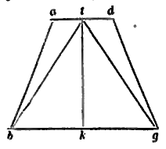
Which let us also show with numbers: let side .ab. be 12, and .bg. 12, and let .ad. be 3; let side .gd. also contain 15 perches: and because in triangle .ebg. straight line .da. is drawn parallel to base .bg., as .ad. is to .bg., that is as 3 is to 12, so will .ea. be to .eb.; wherefore as 3 is to 9, so will .ea. be to .ab.; therefore .ea. is 4, namely a third part of .ab.; therefore the whole .eb. is 16: therefore when the squares of lines .eb. and .ea. are added together, namely 256 and 16, they will be 272; half of which, namely 136, is the square of line .ez.; and because as .ez. is to .eb., so is .zi. to .bg.; therefore as the square of line .ez. is to the square of line .eb., that is as 136 is to 256, whose ratio in lowest terms is as 17 to 32, so will be the square of line .zi. to the square of line .bg.: wherefore if we multiply 17 by 144 and divide by 32, there will come 76 1/2 for the square of line .zi.: and because triangle .ebg. is right-angled, triangle .ezi. will also be right-angled, and likewise triangle .ead.: wherefore if we multiply half of .ez. by .zi., we shall indeed have the area of triangle .ezi., which is 51, which comes from the root of the multiplication of a fourth part of 136 by the square of line .zi., that is by 76 1/2; which multiplication is the root of 2601; from which area if we take away triangle .ead., which is 6, there will remain 45 for the area of quadrilateral .azid.; which 45 is half of the whole half-truncated quadrilateral .abgd.: because if we multiply half of .ab. by the sum of .ad. and .bg., namely 6 by 15, indeed double 45, namely 90, will come forth: wherefore it is proved that quadrilateral .ai. is half of the whole quadrilateral .abgd.: or otherwise, when .ez. is subtracted from .eb., namely the root of 136 from 16 for line .zb., there will remain 16 minus the root of 136; half of which, which is 8 minus the root of 34, if we multiply by the sum of .zi. and .bg., namely by 12 and the root of 76 1/2, we shall likewise have 45 for the area of quadrilateral .zg. For how that multiplication ought to be done, so that the manner of multiplying binomials by apotomes may be had, we take care to show. First you will set down the names of the aforesaid, as is seen in the margin, and you will multiply whole numbers by whole numbers, namely 12 by 8, and there will be 96 whole units; to which add the multiplication of 8 by the root of 76 1/2, and there will come forth 96 and one root of the product from multiplying 64 by 76 1/2, namely of 4896; from which subtract the multiplication of 12 by the root of 34, namely one root of 4896, and there will remain 96 only; from which subtract the multiplication of the root of 34 by the root of 76 1/2, namely 51, and there will remain 45, as I said before, for the area of quadrilateral .zg.
And if you wish to divide any of the aforesaid truncated-head figures into two equal parts across side .ad., divide the parallel sides .ad. and .bg. into two equal parts at points .t. and .k., and you will join straight line .tk., as is clear in the second figure. I say indeed that quadrilateral .abgd. is divided into two equal parts by line .tk.; which is proved thus. I shall join straight lines .tb. and .tg., and triangles .tkb. and .tkg. will be equal to one another, since they are under one altitude and have equal bases. Again, because triangles .bat. and .gtd. are under one altitude, as .at. is to .td., so is triangle .bat. to triangle .gtd.: for .at. is equal to straight line .td.; wherefore triangle .bat. is equal to triangle .gtd. Therefore triangle .tkb. is also demonstrated to be equal to triangle .tkg.; wherefore quadrilateral .ak. is equal to quadrilateral .tg. Therefore quadrilateral .abgd. is divided into two equal parts by line .tk.; and it is manifest from what we have said that in every quadrilateral having two parallel sides, if any straight line proportionally cuts those parallel sides, it will cut the figure itself in the same ratio.
f. 0134 · p. 127

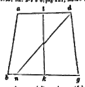


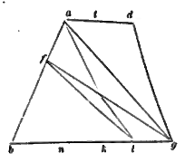
For as we said, as .at. was to .td., so was .bk. to .kg.: wherefore as .at. was to .td., so was quadrilateral .ak. to quadrilateral .tg. And if you wish to divide a quadrilateral of two parallel sides into two equal parts by a line drawn from a given point upon the lesser of the parallel sides, as quadrilateral .abgd., which is divided into two equal parts by line .tk.; and in it upon side .ad. let the given point be .a., I shall take upon side .kg. straight line .kl. equal to straight line .ta.; and .bl. will be half of sides .ab. and .bg., and I shall join straight line .al. I say that quadrilateral .abgd. is divided into two equal parts by line .al. Which is proved thus. Since straight line .at. is parallel to straight line .kl., and straight line .al. falls upon them, angles .tam. and .mlk. will be equal to one another; for the same reason, therefore, angle .atm. is also equal to angle .mkl., and also the angles at .m. are equal to one another, since they are vertical angles; and base .at. is equal to base .kl.; wherefore triangle .amt. is equal to triangle .lmk.; to which if quadrilateral .mabk. be added in common, triangle .abl. will be equal to quadrilateral .abkt., which is half of the whole .ag., as is clear in the third figure. In like manner also, if the given point upon side .ad. be .d., I shall take straight line .kn. equal to straight line .td., and the whole .gn. will be half of sides .ad. and .bg.: and I shall join straight line .dn., which will divide quadrilateral .abgd. into two equal parts, as is seen in this fourth figure: which will be proved by the things that were said in the preceding figure. And this is also held, that if a given point upon line .bg. be between points .n. and .l., the falling of the line dividing that figure will drop upon side .ad. But if the point be given between .b. and .n., or between .lg., we shall demonstrate how a line may be produced from it dividing the whole quadrilateral into two equal parts. Again let quadrilateral .abgd. of two parallel sides be repeated, and in it let straight line .dn. be drawn dividing quadrilateral .abgd. into two equal parts. Let the given point upon line .bg. be .b.; I shall indeed join straight line .db., and place line .nc. parallel to it, and join straight line .bc. I say that quadrilateral .abgd. is divided into two equal parts by line .bc., which is drawn from the given point .b.; which is proved thus: triangles .ncb. and .ncd. are equal to one another, since they are between the parallels .bd. and .nc. and upon the same base .nc.; to which if triangle .cng. be added in common, triangle .cgb. will be equal to triangle .dgn. But triangle .dgn. is half of quadrilateral .abgd.; wherefore triangle .cgb. is half of quadrilateral .abgd. And it must be known that if the given point be between points .bn., a line drawn upon line .bn. from that given point will cut line .gd. between points .cd.; which section will be found if the given point between .bn. be joined with point .d., and a line parallel to that line be drawn from point .n. In like manner also one must work if the given point upon line .bg. be between .lg. For example: again let quadrilateral .abgd. be set before us divided into two equal parts by line .al., and let .g. be the given point; I shall join straight line .ga. in the aforesaid order, and draw straight line .lf. parallel to it, and join .gf., which will divide quadrilateral .abgd. into two equal parts, and it issues from the given point .g. Which is proved in the order and manner aforesaid. It has already been shown how quadrilaterals of two parallel sides ought to be divided into two equal parts by a line drawn from any given point upon its parallel lines; now let us show how they may be divided by a line issuing from a given point upon the remaining sides.
Again let quadrilateral .abgd. be set before us divided into two equal parts by line .zi. parallel to base .bg., and let line .gf., found in the figure written above, also be drawn in it, and let a point be given upon line .ab. in whatever part of it you wish;
f. 0135 · p. 128


and it will be between .bz., or between .zf., or between .fa., or it will be one of them; whence if the given point be .b., quadrilateral .abgd. will indeed be divided into two equal parts by line .bc.: similarly if the given point be .z., straight line .zi. indeed divides quadrilateral .abgd., as has been said. And if .f. be the given point, surely straight line .fg. will cut quadrilateral .abgd. into two equal parts, as has been shown: and if it be .a., it will be cut by straight line .al. into two equal parts according to the things we premised. But let the given point .h. be between points .b. and .z.; I shall join line .hi.; and through point .z. I shall draw straight line .zc. parallel to straight line .ih., and I shall join straight line .hc. I say that quadrilateral .abgd. is cut into two equal parts by line .hc. drawn from point .h.; which is proved thus. Since between the parallels .hi. and .zc. and upon base .hi. are triangles .hic. and .hiz., those triangles are equal to one another; wherefore if we add to each of them in common quadrilateral .igbh., quadrilateral .cgbh. will be equal to quadrilateral .izbg., which is half of the whole quadrilateral .abgd., as has been shown. And if a straight line is to be drawn from point .p. placed between .zf., straight line .pi. will be joined, and straight line .zq. will be parallel to it; and straight line .pq. will be joined, which divides quadrilateral .abgd. into two equal parts; which needs no proof, since by the things that have been said it becomes clearly evident: and if the given point be between .a. and .f., let it be .r.; I shall join straight line .rg., and place straight line .fs. parallel to it, and join straight line .rs., which will divide quadrilateral .abgd. into two equal parts: for example: triangles .fsg. and .sfr. are equal to one another; to which when triangle .sbf. is added in common, triangle .rbs. will be equal to triangle .fbg. But triangle .fbg. is half of quadrilateral .abgd.; wherefore triangle .rbs. will also be half of the same quadrilateral. In like manner also one must work if the given point be upon side .dg.
I shall demonstrate again in another way how quadrilaterals of two parallel sides ought to be divided from their angles. Let there be a truncated-head quadrilateral .abgd., whose sides .ad. and .bg. are parallel, and let the lesser of them be .ad.; and I shall draw in it diameters .ag. and .bd. cutting one another at point .m.; and because sides .ad. and .bg. are parallel, triangles .amd. and .bmg. will be similar: wherefore as .bg. is to .ad., so is .bm. to .md., and .gm. to .ma.: for .bg. is greater than .ad.; therefore .bm. is also greater than .md., and .gm. than .ma.: therefore let diameters .ag. and .db. be divided into two equal parts at points .e. and .z., and through point .e. let straight line .ec. be drawn parallel to diameter .bd., and let straight line .bc. be joined. I say that quadrilateral .abcd. is divided from angle .b. by line .bc.; which is proved thus: I shall join straight lines .be. and .ed.; and because point .e. is in the middle of diameter .ag., triangles .ade. and .deg. will be equal to one another, and also triangle .abe. is equal to triangle .bge.; wherefore quadrilateral .edab. contains half of the whole quadrilateral .abgd.: and because triangles .bdc. and .bde. are between the parallels .bd. and .ec. and upon base .bd., they will be equal to one another: to which when triangle .abd. is added in common, quadrilateral .abcd. will be equal to quadrilateral .abed. But quadrilateral .abed. is half of quadrilateral .abgd.; wherefore quadrilateral .abgd. is also half of quadrilateral .abgd. Similarly if we draw line .zf. parallel to diameter .ag., and join straight line .gf., quadrilateral .abgd. will be divided into two equal parts by line .gf. drawn from angle .g. Next, so that the division may come from the remaining angles, I shall take straight lines .bl. and .gn. equal to half of sides .ad. and .bg.; or I shall produce lines .ce. and .fz., and they will necessarily fall upon points .l. and .n., because above .ne. was drawn parallel to diameter .bd.
f. 0136 · p. 129
and .lf. parallel to diameter .ag.; and I shall draw straight lines .al. and .dn., and the things proposed will follow, as was demonstrated above. It has been demonstrated, therefore, how quadrilaterals of two parallel sides are divided from a given point upon any side of them; now let us say how they ought to be divided from a given point outside the figure.
Again let there be set before us quadrilateral .abgd. of two parallel sides divided into two equal parts from its angles by lines .al., .dn., .gf., and .bc.; which straight lines being produced infinitely in either direction to points .e., .z., .i., .t., .k., .h., .o., and .p., it will be demonstrated that no point can be given outside quadrilateral .abgd. except upon one of those four lines, or between two of them in order; wherefore if a point be given upon any of them, it will indeed be the straight line drawn from the given point dividing quadrilateral .abgd. into two equal parts: as if the given point be .e., line .eal. will issue from it, which divides quadrilateral .abgd. into two equal parts; which same thing you should understand for the rest. But if the given point .q. fall between lines .ea. and .zd. above side .ad., and I wish that from point .q. a straight line issue dividing quadrilateral .abgd. into two equal parts, since sides .ad. and .bg. are parallel, I shall produce straight line .qm. and lead it to point .v. I say that quadrilateral .abgd. is divided into two equal parts by line .rs., which issues from the given point .q.; which is proved thus: since straight lines .ad. and .nl. are parallel to one another, and straight line .rs. falls upon them, the angle under .ars. will be equal to the angle under .rsl., and also angle .sla. is equal to angle .lar., and straight lines .am. and .ml. are equal to one another, since straight lines .ad. and .nl. are demonstrated to be equal to one another; because when straight lines cut one another in equal and parallel straight lines, it is shown in geometry that they cut each other equally: whence straight line .nm. is equal to straight line .md., and .am. to straight line .ml., as I said before: wherefore triangles .arm. and .msl. are equal, equiangular, and equilateral to one another; to which if quadrilateral .absm. be added in common, quadrilateral .absr. will be equal to triangle .abl., namely half of quadrilateral .abgd. Therefore quadrilateral .abgd. is cut into two equal parts by line .rs., which issues from point .q. Similarly if a point were given below line .nl. between straight lines .nh. and .lk., one must work in the same way, namely that point would be joined with .m., and that straight line would be produced onto side .ad.
f. 0137 · p. 130
For example: as if the point were .v., quadrilateral .abgd. would indeed be divided into two equal parts by line .rs. issuing from the given point .v. And if between lines .nh. and .ob. a point .x. be given, as is seen in this other figure, let two threads be had, one of which is stretched upon diameter .ab., and let it be fixed upon point .d.; and let the other be stretched from .n. to .c., and let it be fixed upon point .n.; and then the threads will be parallel to one another: and let the first thread be moved from .b. toward .n. cutting line .bn.; and let the other be moved from .c. toward .d. cutting line .cd.; and let them always be parallel to one another in their motion: and let this be done until the intersections of lines .bn. and .cd. look in a straight line toward the given point .x.; and then let them make a straight line drawn from point .x. pass through those intersections; and what is sought will come forth. For example. Let the first thread fall upon straight line .dy., the second upon straight line .rn.; and let them be parallel to one another: and let points .ry. look in a straight line toward point .x.; and let straight line .xyr. be drawn. I say that straight line .ry. cuts quadrilateral .abgd. into two equal parts; which is proved thus. Since threads .nr. and .dy. are parallel, and between them are triangles .ncd. and .nry. upon base .nr., those triangles are equal to one another: if triangle .rgn. be added in common, triangle .rgy. will be equal to triangle .dgn.: but triangle .dgn. is half of quadrilateral .abgd.; therefore triangle .rgy. is also half of the same quadrilateral. And in the same way one must work if a point be given between line .dz. and line .ci.: as if that point were .q., and it looked in a straight line toward points .r. and .y. between the parallel threads .dy. and .nr.; wherefore if through the point a straight line descends passing through points .r. and .y., quadrilateral .abgd. will be divided into two equal parts, as has been shown. And in the same way one must work if the point should fall between lines .gl. and .lk., or between lines .fp. and .ae., that is, a thread would be placed upon .ga. and fixed upon point .a., and another upon .lf. and fixed upon point .l., and the threads would be moved in parallel cutting straight lines .af. and .gl., until the intersections look toward the given point in one straight line. But if the given point be outside line .bf. and between lines .fp. and .ob., how one must work let it be demonstrated in this other figure, in which straight lines .oi. and .pt. are drawn dividing quadrilateral .abgd. from angles .b. and .g.; and let the given point be .z. falling between straight lines .fp. and .ob., from which we wish to draw a line dividing quadrilateral .abgd. into two equal parts.
f. 0138 · p. 131

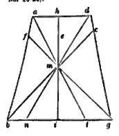
I shall stretch the first thread from .c. to .f., and let it be fixed upon .f.; and let the other thread be stretched upon side .gb., and let it be fixed upon point .g.: then let the threads be moved in parallel cutting straight lines .bf. and .cg., until the intersections look toward the given point .z. For example: let the thread which was fixed upon .g. fall upon line .gq., and the remaining one upon line .fx.; and let points .x., .q., and .z. be in one straight line, and let straight lines .gq. and .fx. be parallel: and let straight line .zqx. be joined. I say indeed that quadrilateral .abgd. is divided into two equal parts by line .qx., which is drawn from the given point .z.; which is proved thus. Since straight lines .gq. and .xf. are parallel, triangles .qgx. and .qgf. will be equal to one another: to which if triangle .qbg. be added in common, quadrilateral .qbgx. will be equal to triangle .fbg., namely half of quadrilateral .abgd. And in the same way we shall work if the given point be outside line .cg. and between straight lines .ci. and .gt. It has been demonstrated, therefore, how a quadrilateral of two parallel sides is divided by a line issuing from any point outside the figure.
On the division of the same kind of quadrilaterals by a straight line passing through a given point within it.
Let there be a truncated-head quadrilateral .abgd., whose sides .ad. and .bg. are parallel, and let the lesser of them be .ad. And let it lie divided into two equal parts by any of the straight lines .al., .dn., .gf., or .bc., as above: let the first given point be .e. falling within triangle .amd.: I shall indeed join straight line .em., and draw it out in either direction to points .ih. I say that quadrilateral .abgd. is divided into two equal parts by line .hi.; which is proved thus: triangles .hma. and .mil. are equal to one another; to which if quadrilateral .abim. be added in common, quadrilateral .abih. will be equal to triangle .abl., which contains half of quadrilateral .abgd. In like manner also, if the given point fall within triangle .nml., one must work, namely we shall join that point with point .m., and produce that line in either direction, and we shall have what is desired. And if the given point be upon any of the aforesaid straight lines .al., .dn., .gf., or .bc., that very line will indeed be the straight line passing through that point dividing quadrilateral .abgd. into two equal parts. But if the given point be within quadrilaterals .abnm. and .dmlg., we shall have to work with threads, namely first I shall place one thread upon points .d. and .b., and fix it upon point .d., and furthermore I shall stretch another thread from .n. to .c., fixing it upon .n., and I shall lead those threads in parallel cutting straight lines .bn. and .cd., until the intersections look toward one another through the given point, if that be possible: and if this be found impossible, I shall again stretch threads from .a. to .g., and from .f. to .l., and fix them upon points .a. and .l., and I shall lead them in parallel cutting lines .fa. and .gl., until the intersections look toward one another through the given point: if even that be impossible, I shall again stretch threads from .c. to .g. and from .f. to .c., and fix them upon points .g. and .f., and lead them in parallel cutting straight lines .bf. and .cg., until the intersections look toward one another through the given point; which without doubt will be possible: and then let a straight line be drawn through those intersections, and what is proposed will be had: which will be proved by the things that we said above. Now enough has been said on the division of truncated-head figures into two equal parts: now we take care to show how they ought to be divided unequally in a given ratio.
Again let quadrilateral .abgd. be set before us, which must be divided by a straight line parallel to its base in the given ratio of .ez. to .zi. Indeed let sides .ba. and .gd. be drawn out from points .a. and .d. until they meet in .t.;
f. 0139 · p. 132
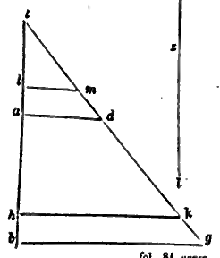

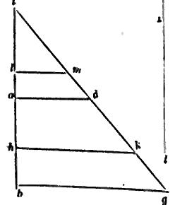

and I shall set the square of line .tl. to the square of line .at. as .zi. to .ez.; and let the square of line .ht. be to the square of lines .bt. and .tl. as .ez. to .ei.; and through points .l. and .h. I shall draw straight lines .lm. and .hk. parallel to each of the straight lines .hg. and .ad. I say that quadrilateral .ag. is divided in the given ratio of the number .ez. to the number .zi. by line .hk.; which is proved thus. Since triangles .tlm. and .tad. are similar, as the square of line .tl. is to the square of line .ta., so will triangle .tlm. be to triangle .tad.: for as the number .zi. is to the number .ez., so is the square of line .tl. to the square of line .ta.: by equality therefore as .zi. is to .ez., so will triangle .tlm. be to triangle .tad.: by composition therefore as .ei. is to .ez., so will triangles .tlm. and .ead. be to triangle .tad.: by permutation therefore as .ez. is to .ei., so will triangle .tad. be to triangles .tad. and .tlm.: for as .ez. is to .ei., so is the square of line .ht. to the squares of lines .bt. and .tl. But as the square of line .ht. is to the squares of lines .bt. and .tl., so is triangle .thk. to triangles .tbg. and .tlm.: by equality therefore as .ez. is to .ei., so is triangle .thk. to triangles .tbg. and .tlm. But to triangle .thk. are equal quadrilateral .ak. and triangle .tad. Similarly to triangles .tbg. and .tlm. are equal quadrilateral .ag. and triangles .tad. and .tlm.: therefore as .ez. is to .ei., so is quadrilateral .ak. with triangle .tad. to the sum of quadrilateral .ag. and triangles .tad. and .tlm.: and so was triangle .tad. to triangles .tad. and .tlm. Whence the ratio of quadrilateral .ak. to quadrilateral .ag. is as .ez. to .ei.: by separation, therefore, as .ez. is to .ei., so will quadrilateral .ak. be to quadrilateral .hg., as is required: which let us also show with numbers. Let side .ad. be 6, and .ab. 12, and .bg. 15, and .dg. 15; and let the angle at .b. be right; wherefore when .ba. and .gd. are produced to .t., .at. will be 8 and .td. 10: wherefore the whole .tb. will be 20; and let the ratio of .ez. to .ei. be as 4 to 3; therefore the square of straight line .tb. will be 400, and the square of line .tl. will be 48, because .iz. of .ze. is 3/4; whence three fourths of 64, namely of the square of line .ta., are 48; which joined together will be 448; from which if we take the ratio of .ez. to .ei., namely four sevenths, there will come 256 for the square of line .th.: therefore .th. is 16: and because straight line .th. is double .ta., therefore .hk. will likewise be double .ad.; therefore .hk. is 12. Whence if we join .kh. with .ad., and multiply the sum by half of the perpendicular .ah., which is 4, there will come 72 for the area of quadrilateral .ak.: likewise when half of .bh., which is 2, is multiplied by the sum of .bg. and .hk., namely by 27, there will come 54 for the area of quadrilateral .hg.: for the ratio of 72 to 54 is as 4 to 3, which is the given ratio of .ez. to .zi. Otherwise, more readily, let .ms. be set to .ls. as the ratio of the square of line .tb. to the square of line .ta.; and let .ml. be divided at .n., and let .ln. to .nm. be the given ratio; and let the square of line .th. be taken to the square of line .tb. as .ns. to .sm.; and let .hk. be drawn parallel to base .bg.: it is proved again that quadrilateral .ak. to quadrilateral .hg. is as .ln. to .nm.; since as the square of line .tb. is to the square of line .ta., so is triangle .tbg. to triangle .tad.; and the ratio of .ms. to .ls. is as the square of line .tb. to the square of line .ta.: wherefore as .ms. is to .ls., so will triangle .tbg. be to triangle .tag. Again, because as .ms. is to .sn., so is the square of line .tb. to the square of line .th.: for as the square of line .tb. is to the square of line .ht., so is triangle .tbg. to triangle .thk.: and therefore as .ms. is to .ns., so is triangle .tbg. to triangle .thk.: by conversion therefore as .sm. is to .nm., so is triangle .tbg. to quadrilateral .hg.;
f. 0140 · p. 133

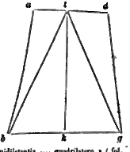

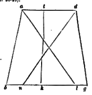
as .ms. was to .ls., so was triangle .tbg. to triangle .tad. Whence if we permute, as the number .ms. is to triangle .tbg., so will the number .ls. be to triangle .tad., and the number .ns. to triangle .thk.: therefore the numbers .ls. and .ns. are in one ratio to triangles .tad. and .thk.; namely in that which the number .ms. has to the surface .tbg., in which also is the number .nm. to quadrilateral .hg.: wherefore by separation as .sl. is to .ln., so will triangle .tad. be to quadrilateral .ak.; and as .sn. is to .nm., so will quadrilateral .ak. be to quadrilateral .hg.: therefore the given quadrilateral .ag. is divided by line .hk. parallel to base .bg. in the also given ratio of the number .ln. to the number .nm.; which it was necessary to do: which let us also perform with numbers: for as we said above, the square of line .tb. is 400, and of line .ta. 64, whose ratio in lowest terms is as 25 to 4: wherefore I shall set .ms. to 25, and .ls. to 4, and .ml. will remain 21; which being divided in the given ratio, namely in that which 4 has to 3 at point .n., .ln. will be 12 and .nm. 9: wherefore if we take the square of line .th. to the square of line .tb. as .sn. to .sm., that is as 16 to 25, we shall again find the square of line .th. to be 256; wherefore .th. will be 16, as we found above. Or otherwise, I shall take away the square of line .ta. from the square of line .tb., and there remain 336; upon four sevenths of which, namely upon 192, if we add the square of line .ta., there will likewise be 256 for the square of line .th. And if you wish to divide a truncated-head quadrilateral in some given ratio by a straight line drawn across the two parallel sides, divide those sides in the same ratio, and draw a line to the points of division. For example: we wish to cut quadrilateral .abgd. across parallel sides .ad. and .bg. in the given ratio of .ez. to .zi. I shall place points .t. and .k. between .ad. and .bg., and let it be as .ez. is to .zi., so is .at. to .td., and .bk. to .kg.; and I shall join .tk. I say that quadrilateral .ak. to quadrilateral .tg. is as .ez. to .zi.; which is proved thus: I shall produce from point .t. to points .bg. straight lines .tb. and .tg., and triangles .tbk. and .tkg. will be under one altitude; wherefore as .bk. is to .kg., so is triangle .tbk. to triangle .tkg. Again, because triangles .bat. and .gtd. are under one altitude, since they are between two parallels, as .at. is to .td., that is .bk. to .kg., so is triangle .bat. to triangle .gtd.: therefore as .bk. is to .kg., that is as .ez. is to .zi., so is quadrilateral .ak. to quadrilateral .tg.: therefore quadrilateral .abgd. is divided in the given ratio by straight line .tk. drawn across the parallel sides; which it was necessary to do. And if we wish to have the division in the same ratio from angles .a. and .d., we shall place points .n. and .l. upon side .bg.; and let straight line .kl. lie equal to straight line .ta., and straight line .gn. equal to straight line .bl., as is shown in this other figure; and we shall join straight lines .dn. and .al.; and it will be proved by the things that have been said that triangle .abl. is equal to quadrilateral .ak.: wherefore as .ez. is to .zi., so is triangle .abl. to quadrilateral .algd. Again, because triangles .abl. and .dgn. are upon equal bases .bl. and .gn., and in the same parallels .ad. and .bg., they will be equal to one another. Wherefore triangle .dgn. is equal to quadrilateral .abkt.; wherefore the remainder, namely quadrilateral .nbad., will be equal to quadrilateral .tkgd. Whence as quadrilateral .abkt. is to quadrilateral .tkgd., that is as .ez. is to .zi., so is triangle .dgn. to quadrilateral .nbad.: therefore quadrilateral .abgd. is divided from angles .a. and .d. in the given ratio .ez. to .zi.; which it was necessary to do. And if from either of the angles .b. and .g. you wish to draw a straight line dividing quadrilateral .abgd. in the ratio which .ez. has to .zi., you can do this in two ways:
f. 0141 · p. 134
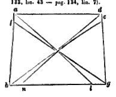

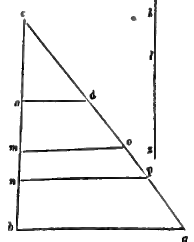
as if you wish to do this from angle .b. You will mark point .n. to which the aforesaid division came from angle .d.; and you will set the rectangle .bg. by .gc. equal to the rectangle .dg. by .gn.; and you will join straight line .bc.; or when a diameter is drawn from .b. to .d., draw a parallel straight line from .n. to .c., and .bc. will be joined, as we have said. Similarly let us do if we wish to work from angle .g., namely I shall understand point .l., to which the aforesaid division came from angle .a.; and I shall set the rectangle .gb. by .bf. equal to the rectangle .ab. by .bl.; or when a diameter is drawn from .a. to .g., I shall place a parallel from .l. to .f., and I shall join .gf., which will divide quadrilateral .abgd. in the given ratio; because as .ez. is to .zi., so will triangle .fbg. be to quadrilateral .afgd., and also triangle .bgc. to quadrilateral .abcd. will be as .ez. to .zi.; which will be proved by the things that have been said; and we shall also divide that quadrilateral from every given point upon any of its sides, and even from every given point within or outside.
Here begins the division of quadrilaterals into several parts.
But if you wish to divide some truncated-head figure into three equal parts by straight lines parallel to its base, as quadrilateral .abgd., whose sides .ad. and .bg. are parallel, I shall produce the remaining sides .ab. and .dg. from points .a. and .d. until they meet at point .e.; and let straight line .zti. be set beside it; and let the ratio of .zi. to .it. be as the ratio of the square of line .eb. to the square of .ae.; and I shall divide .tz. into three equal sections, which are .tk., .kl., and .lz., and I shall set the square of line .em. to the square of line .eb. as .ki. to .zi. Again I shall set the square of line .en. to the square of line .eb. as .li. to .zi., and through points .m. and .n. I shall produce straight lines .mo. and .np. parallel to base .bg. I say that quadrilateral .ag. is divided into three equal parts, which are quadrilaterals .ao., .mp., and .ng.; which is proved thus. For as we said, as the square of line .be. is to the square of line .ae., so is triangle .ebg. to triangle .ead.; wherefore as .zi. is to .it., so will triangle .ebg. be to triangle .ead. Likewise because as .zi. is to .ik., so is the square of line .be. to the square of line .me.; and as the square of line .be. is to the square of line .me., so is triangle .ebg. to triangle .emo.; therefore as .zi. is to .ik., so is triangle .ebg. to triangle .emo. Also as .zi. is to .il., so will triangle .ebg. be to triangle .enp.: by separation as .it. is to .tk., so will triangle .ead. be to quadrilateral .ao.; also as .tk. is to .kl., so will quadrilateral .ao. be to quadrilateral .mp.; for .tk. is equal to .kl.; wherefore quadrilateral .ao. is equal to quadrilateral .mp. Again as .kl. is to .lz., so will quadrilateral .mp. be to quadrilateral .ng.: for .kl. is equal to .lz.; and quadrilateral .pm. will be equal to quadrilateral .ng.: therefore quadrilaterals .ao., .mp., and .ng. are equal to one another, as we said before; and so that these things may be worked with numbers, let .ad. be 6, and .bg. 15, and .ab. 12, and .dg. 15; and let the angle at .b. be right; wherefore the whole .eb. will be 20, whose square to the square of line .ea. is as 25 to 4: I shall set .zi. to 25, and .ti. to 4, and .zt. remains 21; which being divided into three equal parts, there will be 7 in each of the parts .tk., .kl., and .lz.; wherefore .ik. is 11: therefore I shall multiply 11 by 400 and divide by 25; or I shall extend the twenty-fifth part of the square of line .eb., which is 16, by 11, and there will come 176 for the square of line .em. Again I shall extend .il., namely 18, by 16, which is 1/25 of the square of line .eb., and there will come 288 for the square of line .en.: therefore .am. is the root of 176 minus 8, since .ea. is 8; and line .mn. is the root of 288 minus the root of 176: and line .nb. is 20 minus the root of 288:
f. 0142 · p. 135
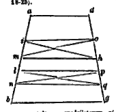

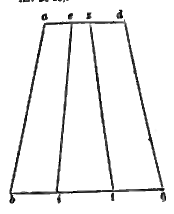
and because as the square of line .ea. is to the square of line .ad., that is as 16 to 9, so is the square of line .em. to the square of line .mo.: if we multiply 176 by 9 and divide by 16, or if we multiply 1/16 of 176, which is 11, by 9, there will indeed come 99 for the square of line .mo. Again if we multiply 1/16 of 288, namely of the square of line .en., which is 18, by 9, there will come 162 for the square of line .np.: which having been found, if we investigate the area of quadrilaterals .ao., .mp., and .ng. according to the things we have taught, you will find those quadrilaterals to be equal to one another. Otherwise, with the square of line .eb. add double the square of line .ea., and you will find a third part of them to be the square of line .em. Similarly if we add double the square of line .be. with the square of line .ea., a third of what comes forth will be the square of line .em.: or when 64 is subtracted from 400, namely the square of line .ea. from the square of line .eb., there will remain 336; a third of which, namely 112, added upon 64, there come 176 for the square of line .em.: to which when 112 is also added, they likewise give back 288 for the square of line .en.; the proof of which comes from the things I said above, when we taught how to divide truncated-head quadrilaterals proportionally. And if side .ab. be alongside a road, and each of the three co-heirs wish, as is customary, to have a third of that side, I shall divide side .ab. into three equal parts at points .i. and .l.; and I shall join straight lines .iolp.; and through point .m. I shall draw straight line .mh. parallel to line .io.; and through point .n. I shall draw straight line .nq. parallel to straight line .lp.; and I shall join straight lines .ih. and .lq.; and thus quadrilateral .abgd. will be divided into three equal parts by lines .ih. and .nq., which are quadrilaterals .aihd., .ilqh., and .lbgq.; which is proved thus. Since quadrilateral .amod. is a third part of quadrilateral .abgd., if triangle .oim. be taken away from it and triangle .oih. be restored to it, quadrilateral .aihd. will be equal to quadrilateral .amod.: and in the same way the remaining divisions will be proved. And if we cut the parallel sides .ad. and .bg. into three equal sections, and join straight lines in them, the quadrilateral will indeed be divided into three equal sections. For example: let there be set before us the truncated-head figure .abgd., and let sides .ad. and .bg. be divided into three equal parts at points .ez. and .it., and let straight lines .ei. and .zt. be joined. I say that quadrilateral .abgd. is cut into three equal sections, which are quadrilaterals .al., .et., and .zg.: for they have bases and heads equal to one another, and are under one altitude: or because as .ae. is to .ed., so is .bi. to .ig., quadrilateral .ai. will therefore be in the same ratio to quadrilateral .eg.: and if we join them, as .bi. is to .bg., so will quadrilateral .ai. be to quadrilateral .ag.: for .bi. is a third part of .bg., and therefore quadrilateral .ai. will also be a third of quadrilateral .ag. Again, because as .ae. is to .ez., so is .bi. to .it., and .ae. is equal to .ez., and .bi. to .it., wherefore quadrilateral .ai. is equal to quadrilateral .et.; therefore .ai. is a third part of quadrilateral .ag.; and quadrilateral .et. will also be a third of quadrilateral .ag.: and the remainder .zg. will be the remaining third part. And if we wish to cut a third part of quadrilateral .ag. from either of the angles .a. and .d., we shall divide straight lines .ei. and .zt. into two equal parts at points .k. and .m.; and we shall join straight lines .ak. and .dm.; and we shall lead them to points .l. and .n.; and each of the triangles .abl. and .dgn. will be a third part of quadrilateral .abgd. Which is proved thus. Because straight line .ek. is equal to straight line .ki., triangles .ake. and .ikl. will also be equal and similar to one another, since the bases .ae. and .il. are parallel: wherefore if in common
f. 0143 · p. 136
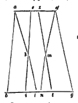

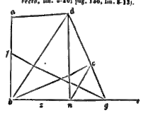
quadrilateral .abik. be added, triangle .abl. will be equal to quadrilateral .eb. But quadrilateral .eb. is the third part of quadrilateral .ag.; wherefore triangle .abl. is the third part of quadrilateral .ag. Similarly it will be shown that triangle .dgn. is also equal to quadrilateral .zg., which is the third part of the whole .ag.: indeed, when triangle .abl. is cut off from quadrilateral .abgd., there will remain the truncated-head quadrilateral .algd.: which, if it be divided by any one of the ways aforesaid, will render quadrilateral .abgd. divided into three equal sections. Similarly, if triangle .dgn. is taken away from quadrilateral .abgd., there will remain quadrilateral .abnd. to be divided into two equal parts. And if through a line drawn from point .b. we wish to cut off a third part from quadrilateral .ag., I will first draw line .dn. cutting off from quadrilateral .ag. a third of it, which is triangle .agn.; and I will draw diagonal .bd., and parallel to it I will place line .ne., and I will join straight line .bc. I say that straight line .bc. cuts off from quadrilateral .ag. a third of it, which is triangle .cgb.: because if upon triangle .cgn. there is added triangle .cbn., which is equal to triangle .cnd., triangle .cgb. will be equal to triangle .dgn.; therefore triangle .cgb. is a third of quadrilateral .ag. Otherwise, because triangles .abd. and .gbd. are under one altitude, namely under that which falls perpendicularly between the parallels .ad. and .bg., they will therefore be to one another as their bases: wherefore as .bg. is to .ad., so is triangle .bgd. to triangle .abd.: compoundedly therefore, as .bg. is to the sum of .bgad., so is triangle .bgd. to quadrilateral .ag.: let straight line .ge. indeed lie equal to straight line .ad.; therefore as .bg. is to .be., so will triangle .dbg. be to quadrilateral .ag.: and let straight line .bz. be cut off from the whole .be., so that it be a third of .be.; and let straight line .gc. lie to straight line .gd. as .bz. to .bg., and let straight line .bc. be joined. I say that triangle .bcg. is the third part of quadrilateral .ag.
For example: triangles .bgc. and .bgd. indeed are to one another as their bases; therefore as .gc. is to .gd., that is as .bz. is to .bg., so will triangle .bgc. be to triangle .bgd. For as .bg. is to .be., so is triangle .bgd. to quadrilateral .ag.: therefore as .bz. is to .be., so will triangle .bgc. be to quadrilateral .ag.: for .bz. is a third part of .be.: wherefore triangle .bgc. will also be a third part of quadrilateral .ag., as I said before. Which let us also demonstrate with numbers: let .ad. be 6, and .bg. 24; and let each of the straight lines .ab. and .dg. be 15: indeed, when 24 is joined with 6 there will be 30: therefore as 24 is to 30, that is as .bg. is to .be., so is triangle .bgd. to quadrilateral .ag.; and as 10 is to 30, so is the third part of quadrilateral .abgd. to quadrilateral .ag.: wherefore if we proportion 10 with 24, namely .bz. with .bg., there will come \(\frac{5}{12}\); which being taken from the whole line .dg., there will come \(6\frac{1}{4}\) for line .gc.: wherefore if we join straight line .bc., the ratio of triangle .bgc. to triangle .bgd. will be as .bc. to .gd. But .gc. of .gd. is \(\frac{5}{12}\); wherefore triangle .bgc. is \(\frac{5}{12}\) of triangle .bgd.; which triangle is \(\frac{24}{30}\), that is \(\frac{4}{5}\) of quadrilateral .ag. Therefore triangle .bgc. is \(\frac{5}{12}\) of four fifths of the whole quadrilateral .ag.: therefore triangle .bgc. is a third of the whole quadrilateral .ag., since \(\frac{5}{12}\) of \(\frac{4}{5}\) of anything is a third of it. In a similar manner also, if we draw diagonal .ag., the ratio of triangle .abg. to quadrilateral .db. will be as .bg. to the sum of lines .bg. and .ad.; from which ratio if we take the ratio which a third of the whole has to that ratio itself, you will find that you ought to take \(\frac{5}{12}\) from line .ba.; let which \(\frac{5}{12}\) be line .bf.; and straight line .gf. will be joined, and triangle .fbg. will be the third part of quadrilateral .bd. Which things being thus shown, we shall demonstrate how the remainders of triangles .cgb. and .fbg. are divided into two equal parts,
f. 0144 · p. 137
namely quadrilaterals .abcd. and .afgd., when we treat of the division of quadrilaterals of diverse sides. And after we have brought the division of three equal portions upon the third parts of the sides and upon each of the angles, we shall be able, through the things that were said above, from similar quadrilaterals a third part, or whatever part we wish, to cut off by a line going forth from a given point outside or inside the figure, or upon one of its sides; whence we shall demonstrate how they ought to be divided proportionally into three diverse parts.
Again, let quadrilateral .abgd. with truncated head be laid down; and let the given ratio be .ez. it.; we wish therefore to divide quadrilateral .ag. into three parts by lines parallel to its base, of which the first to the second may be as .ez. to .zi., and the second to the third as .zi. to .it. Let straight lines .ba. and .gd. first be produced to point .k.; and let the ratio of the square of line .bk. to the square of line .ak. be as .tl. to .el. Then I will place the square of line .bk. to the square of line .km. as .tl. to .lz. After these things I will place the square of line .bk. to the square of line .kn. as .tl. to .il.; and through points .m. and .n. I will draw straight lines .mo. and .np. parallel to base .bg.; and you will find, through the things that were said above, that quadrilateral .ao. is to quadrilateral .mp. as .ez. is to .zi.; and quadrilateral .mp. is to quadrilateral .ng. as .zi. is to .it. Let the sides of quadrilateral .abgd. be as was said in the above-written figure; and let .ad. be subtracted from .bg., namely 6 from 24, there will remain 18; and as 18 is to 6, so will .ba. be to .ak.; wherefore .ak. is 5: but the whole .bk. is 20, whose square to the square of line .ak. is as 16 to 1. Wherefore let me set line .tl. to be 16; and I will set .el. as 1, there will remain 15 for .et., which lies divided in the given ratios .ez. it. Wherefore let us set .ez. as 4, and .zi. as 5, and .it. as 6; and as 4 is to 5, so will .ez. be to .zi.; and as 5 is to 6, so will .zi. be to .it.; and let these be the given ratios: and because as the square of line .bk. is to the square of line .mk., so is .tl. to .lz.: it was also as the square of line .bk. is to the square of line .ak., so is .tl. to .el.: permutatively therefore, as .le. is to .lz., so is the square of line .ak. to the square of line .mk.: for .zl. is quintuple .el.: wherefore the square of line .mk. is quintuple the square of line .ak.; therefore the square of line .mk. is 125. Similarly, as .il. is to .el., that is 10 to 1, so is the square of line .nk. to the square of line .ak.; therefore the square of line .nk. is 250. And the square of line .np. is similarly tenfold the square of line .ad.: wherefore the square of line .np. is 360. Also, because the square of line .mk. is quintuple the square of .ak., the square of .mo. will also be quintuple the square of .ad.; therefore the square of line .mo. is 180. You will also find that perpendicular .ks. is 16; when from the square of line .bk. the square of line .bs. is taken away, there remain 256 for the square of line .ks.: and because .ka. is a fourth of .bk., .fk. will also be a fourth of .ks.; wherefore .kf. is 4, whose square is 16; and the quintuple of it, namely 80, is the square of perpendicular .kh., whose double is the square of line .kr., namely 160. Whence if we multiply half .kh. by .mo., there will come for the area of triangle .kmo. the root of 3600; wherefore triangle .kmo. is 60: from which if triangle .kad., which is 12, is taken away, there will remain 48 for quadrilateral .ao. Again, if we multiply a fourth of the square of .kr., namely 40, by the square of line .np., namely by 360, there will come 14400, whose root, namely 120, is had for the area of triangle .knp.; from which if we take away triangle .kmo., which is 60, there will remain 60 for the area of quadrilateral .mp.
f. 0145 · p. 138
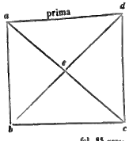


And the remainder which is left from the whole quadrilateral .ag., namely 72, is had for quadrilateral .ng. For the ratio of 48 to 60 is as 4 to 5, that is as .ez. to .zi.; and the ratio of 60 to 72 is as 5 to 6, that is as .zi. to .it., as is fitting. For we can reduce these divisions with parallels from three points given anywhere upon line .ba.: and if we divide line .ad. in any given ratios, and in the same ratios divide side .bg.; and join lines to the points of those ratios, quadrilateral .abgd. would indeed be rendered divided in those ratios; which divisions we shall also reduce to the points of the angles through the things that have been said.
Here begins the division of quadrilaterals of diverse sides.
First indeed I wish to demonstrate in what way a quadrilateral of diverse sides is divided into two equal parts from a given angle. Let there be quadrilateral .abcd., which I wish to divide into two equal parts from the given angle .a.: I will first draw diagonal .bd. subtending angle .bad.; and I will cut it by diagonal .ac. at point .e.; indeed straight lines .be. and .ed. are either equal or not. First let them be equal: and since straight line .be. is equal to straight line .ed., triangle .abe. will be equal to triangle .ade., and likewise triangle .ebc. is equal to triangle .ecd.; wherefore the whole triangle .abc. lies equal to the whole triangle .acd. Therefore quadrilateral .abcd. is divided into two equal parts by diagonal .ac. going forth from the given angle; which it was necessary to do. But let straight line .be. not be equal to straight line .ed. Let .bz. lie equal to straight line .zd.; and I will draw straight line .zi. parallel to diagonal .ac., as is seen in this second figure; and I will join straight line .ai. I say again that quadrilateral .abcd. is divided into two equal portions by line .ai. going forth from the given angle .a., which are triangle .abi. and quadrilateral .aicd.; which is proved thus: I will join straight lines .az. and .cz., and triangles .azd. and .dzc. will be equal to triangles .abz. and .bzc.; wherefore quadrilateral .azcd. is half of quadrilateral .abcd.: and because triangles .aci. and .acz. are upon base .ac., and between the parallels .ac. and .zi. they are equal to one another; if triangle .acd. be added in common, quadrilateral .aicd. will be equal to quadrilateral .azcd. But quadrilateral .azcd. is half of quadrilateral .abcd.; therefore quadrilateral .aicd. is also half of quadrilateral .abcd., as is fitting. Again, if you wish to divide any quadrilateral into two equal parts from a given point upon one of its sides, as quadrilateral .ac., which I wish to divide from given point .e. upon side .ad.: I will first divide quadrilateral .ac. into two equal parts from angle .d.; and let straight line .dt. be what divides it; and I will join .et.: straight line .et. indeed is either parallel to straight line .dc., or not. First let straight lines .et. and .cd. be parallel, as is set down in the third figure; and let straight line .ec. be joined. I say indeed that quadrilateral .ac. is divided into two equal parts by line .ec. going forth from the given point .e. Which is proved thus. Because straight lines .et. and .cd. are parallel, triangles .ecd. and .tcd. will also be equal to one another. But triangle .tcd. is half of quadrilateral .ac.; wherefore triangle .ecd. is also half of quadrilateral .ac.: therefore quadrilateral .ac. is divided into two equal parts from the given point .e.; which it was necessary to do. But let straight line .et. not be parallel to straight line .dc.
I will place straight line .dz. parallel to straight line .et.; and I will join straight line .ez., as is demonstrated in the fourth figure; and quadrilateral .abcd. will be divided into two equal parts by line .ez. Which is proved thus. For triangles .dze. and .dzt. are equal to one another, since they are upon the same base and between the same parallels; to which if there be added in common
f. 0146 · p. 139

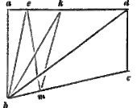

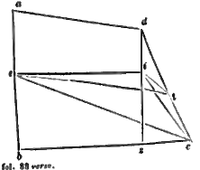

triangle .dcz., quadrilateral .ezcd. will be equal to triangle .dct., namely half of the whole quadrilateral .ac. And it is to be noted that if diagonal .bd. divides quadrilateral .ac. into two equal parts, there will likewise come about the things we have said in these two figures. But if the division falls upon side .ab., as straight line .di., which divides quadrilateral .abcd. into two equal parts, it is necessary to operate otherwise. I will divide quadrilateral .ac. from angle .b. with straight line .bk.; and then if .k. be the given point upon side .ad., from which the straight line dividing quadrilateral .ac. into two equal parts ought to go forth, the straight line will be line .kb. itself. But if .k. be not the given point, then the given point will be between .k. and .d., or between .k. and .a.: first let the given point .e. be between .d. and .k.; and let straight line .be. be joined; and through point .k. I will draw straight line .kl. parallel to straight line .eb., and straight line .el. will be joined, which will divide quadrilateral .ac. into two equal parts; and it will be proved in the aforesaid order.
Again, let the given point .e. be between .a. and .k., straight line .eb. will similarly be joined; and through point .k. let parallel straight line .km. be drawn, and straight line .em. will be joined, which will be dividing quadrilateral .ac. into two equal sections, which are quadrilaterals .am. and .ec., as is clear in the sixth figure: which will also be proved in the aforesaid order. I will indeed designate, by the method demonstrated above, how diverse-sided quadrilaterals are divided from a given point upon one of their sides. Let there be quadrilateral .abcd.; and let the given point be .e. falling first upon the midpoint of side .ab.; and from point .d. I will draw straight line .dz. parallel to straight line .ab.; and I will divide it into two equal parts at point .i.; and I will join straight lines .ei. and .ci. and .ec.; and I will draw straight line .it. parallel to straight line .ec.; and I will join straight line .et.; and quadrilateral .ac. will be divided into two equal parts by line .et. Which is proved thus. Quadrilateral .az. is indeed of two parallel sides; and line .ei. cuts its parallel sides, which are .ab. and .dz., into two equal parts; wherefore quadrilateral .ez. is half of quadrilateral .az. Similarly, because bases .zi. and .id. are equal to one another, triangles .czi. and .cid. will be equal to one another; wherefore triangle .ciz. is half of triangle .cdz.: quadrilateral .ez. was also half of quadrilateral .az.; therefore quadrilateral .ebci. is half of quadrilateral .ac. For triangles .eci. and .ect. are also equal to one another; to which if triangle .ebc. is added in common, quadrilateral .ebct. will be equal to quadrilateral .ebci. But quadrilateral .ebci. is half of quadrilateral .ec.; wherefore quadrilateral .bt. is also half of quadrilateral .ec.; wherefore quadrilateral .bt. is half of quadrilateral .ac., as is fitting. Which things being thus unfolded, we shall be able to divide every quadrilateral into two equal parts from any given point upon one of its sides: and if a given point be outside or within, through which a line can go forth that divides the quadrilateral into two equal parts, we shall be able to work this subtly with the operation of threads.
Demonstration of how any given part is cut off from a diverse-sided quadrilateral from a given angle.
Let there again be quadrilateral .abcd., from which I wish to cut off from angle .d. a given part, which let be a third. I will indeed subtend diagonal .ac. to angle .d., and I will cut it with diagonal .db. at point .e.; indeed straight line .ce. is either a third part of diagonal .ac., or not. First let .ec. be a third part of .ac.; diagonal .bd. will indeed cut off a third part from quadrilateral .ac., which is triangle .bcd. Which will be proved thus. Because triangles .dce. and .dca. are under one altitude, they will be to one another as bases .ce. to
f. 0147 · p. 140

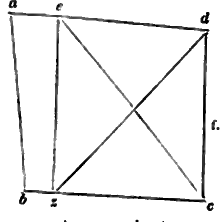


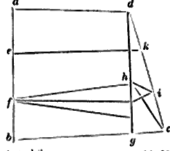

.ca.; for the same reasons triangles .bce. and .abc. are also in the same ratio; wherefore as .ce. is to .ac., so is triangle .bcd. to quadrilateral .ac.: for straight line .ce. is a third part of .ac.; wherefore triangle .bcd. is also a third part of quadrilateral .ac.: therefore the given part, namely a third, has been cut off from quadrilateral .ac. by a line going forth from the given angle .d.; which it was necessary to do. But let .ce. not be a third part of .ac.; I will indeed set .cg. as a third of .ac.; and from point .g. I will draw straight line .gf. parallel to diagonal .bd.; and I will join straight line .fd., which will cut off quadrilateral .fbcd. from quadrilateral .ac.; which I will demonstrate to be a third of the whole quadrilateral .ac. Since .cg. is a third of .ca., triangles .bgc. and .cgd., that is quadrilateral .bcdg., will be a third part of triangles .abc. and .acd., namely of quadrilateral .abcd. To which by the things that have been said quadrilateral .fbcd. will be demonstrated to be equal. And if I wish to cut off a given part from a given quadrilateral from a given point upon one of its sides, as from quadrilateral .abcd., and from given point .e. upon side .ad.; and let us set the given part to be a third. I will first cut off from quadrilateral .ac. triangle .dcz., which let be a third part of quadrilateral .abcd.; and I will join .ez.: indeed straight line .ez. will either be parallel to straight line .dc., or not. Let it first be parallel to it, then I will join .ec.; and triangle .ecd. will be equal to triangle .zcd.: wherefore triangle .ecd. is a third part of quadrilateral .ac. But let straight line .ez. not be parallel to straight line .dc.; then I will place straight line .id. parallel to straight line .ez., and I will join straight line .ei.; and quadrilateral .eicd. will be equal to triangle .zcd., which is a third part of quadrilateral .ac.; which it was necessary to do. Which will be proved through triangles .zdi. and .edi., which are equal to one another, since they are upon base .di. and between parallels .di. and .ez.: to which when triangle .dci. is added in common, quadrilateral .eicd. will come equal to triangle .dcz., as has been said: there will remain therefore quadrilateral .abie. as two thirds of the whole quadrilateral .ac.: which if we divide into two equal parts, quadrilateral .ac. will be divided into three equal parts. Again, let quadrilateral .abcd. be laid down, whose side .ab. let be divided into three equal parts, which let be .ae., .ef., .fb.; and I wish through points .e. and .f. to divide quadrilateral .ac. into three equal sections. I will first cut off from quadrilateral .ac. its third part by a line going forth from point .f.; which I will also do by the second method, namely I will place .gd. parallel to straight line .ab.; and I will set .gh. as a third of .gd.; and I will join straight lines .fh., .ch., and .fc.; and I will draw straight line .hi. parallel to straight line .fc., and I will join straight line .fi.; and quadrilateral .fbci. will be a third part of quadrilateral .ac. Then I will divide quadrilateral .afid. into two equal parts by line .ek.; and thus quadrilateral .abcd. will be divided into three equal portions, which are quadrilaterals .ak., .ei., .fc.: all of which being known, we shall be able to permute the boundaries of the divisions from any given point, if you are not unmindful of the aforesaid demonstrations.
And if you wish to divide any quadrilateral into two parts according to a given portion, and from a given point or angle, let us show how this ought to be done. Let there again be quadrilateral .abcd.; and let the given ratio be .ez. to .zi.: indeed I wish to cut quadrilateral .abcd. from the given angle .d. in the ratio which .ez. has to .zi.: I will first draw diagonal .ac.; and I will place .ct. to .at. as .ez. to .zi.; and I will draw diagonal .db., let which first pass through point .t. I say that straight line .bd. divides quadrilateral .ac. in that ratio which .ez. has to .zi. For example: triangles .dct. and .dta. are indeed to one another as bases .ct. to .ta.: in which ratio are also triangles .cbt.
f. 0148 · p. 141

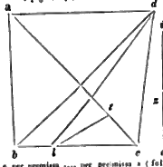


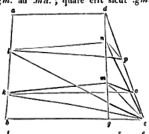

and .tba.; wherefore as .ct. is to .ta., so is triangle .dcb. to triangle .abd. But .ct. to .ta. is as .ez. to .zi.; wherefore as .ez. is to .zi., so is triangle .bdc. to triangle .bda. Therefore quadrilateral .ac. is divided into two parts according to the given ratio, and from the given angle; which it was necessary to do. But let diagonal .bd. not pass through point .t.; it must pass either between .ct., or between .ta.: let it first pass between .ct.: I will indeed join straight lines .bt. and .td.; and quadrilateral .tbcd. will be to quadrilateral .tbad. as .ct. is to .ta., that is as .ez. is to .zi.: and I will place straight line .tk. parallel to diagonal .bd.; and I will join straight line .dk., and quadrilateral .kbcd. will be equal to quadrilateral .tbcd.; which will be proved through the things that have been said; wherefore as .ct. is to .ta., that is as .ez. is to .zi., so will quadrilateral .kbcd. be to triangle .dak.: indeed the proposition is done. And if diagonal .bd. cuts between .at., straight line .tl. will be drawn from point .t. parallel to diagonal .bd.; and straight line .dl. will be joined; and again as .ct. is to .ta., that is as .ez. is to .zi., so will triangle .dcl. be to quadrilateral .abld.; which will be proved by the premises. And if we wish to do this, upon side .ab. I will place .bl. to .la. as .ez. to .zi.; and I will produce .dm. parallel to straight line .ab.; and let .mn. be to .nd. as .bl. to .la.; and I will join straight lines .ln. and .nc. and .lc.; and I will place .no. parallel to .lc.; and I will join .ol.; and quadrilateral .ob. will be to quadrilateral .oa. as .bl. is to .la., that is as .ez. is to .zi.; which will also be proved by the premises: and if from point .l. the parallel line does not fall inside quadrilateral .ac., I will draw line .cp. parallel to line .ab.; and I will set .cq. to .qp. as .bl. to .la.; and I will join straight lines .lq. and .dq. and .ld.; and through point .q. I will place straight line .qr. parallel to line .dl.; and I will join straight line .lr.; and quadrilateral .lbcr. will be to quadrilateral .alrd. as .bl. is to .la., that is as .ez. is to .zi.; which will be proved by the premises.
But if you wish to divide any quadrilateral into more parts and in given ratios, let us show how this ought to be done. Let quadrilateral .abcd. be laid down; and in it let straight line .dg. be drawn parallel to side .ab.; and let the given ratios be .ez. it.: in which ratios I will divide side .ba. at points .k. and .l., that is as .ez. is to .zi., so is .bk. to .kl.; and as .zi. is to .it., so is .kl. to .la.: in which ratios also I will divide straight line .dg. at points .m. and .n.; and I will join straight lines .km., .ln., .cm., and .cn., and .ck., and .cl.; and through point .m. I will draw straight line .mo. parallel to straight line .kc.; and through point .n. I will draw straight line .np. parallel to straight line .cl.; and I will join straight lines .ko. and .lp., which divide the whole quadrilateral .ac. in the given ratios. Which is proved thus. Because as .bk. is to .kl., so is .gm. to .mn.; and as .kl. is to .la., so is .mn. to .nd. As .bk. is to .ka., so will .gm. be to .md.; wherefore as .gm. is
f. 0149 · p. 142


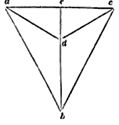
to .md., so will quadrilateral .gk. be to quadrilateral .ma.: it is also as .gm. is to .md., so is triangle .gcm. to triangle .cmd.; wherefore compoundedly as .gm. is to .md., so will quadrilateral .kbcm. be to pentagon .akmcd.: but to quadrilateral .kbcm. quadrilateral .bo. is equal; wherefore as quadrilateral .kbcm. is to pentagon .akmcd., so is quadrilateral .bo. to quadrilateral .ao. But as .gm. is to .md., so is .ez. to .zt. Similarly it will be shown that quadrilateral .lo. is to quadrilateral .ld. as .mn. is to .nd., that is as .zi. to .it.; therefore as .ez. is to .zi., so is quadrilateral .bo. to quadrilateral .kp.; and as .zi. is to .it., so is quadrilateral .kp. to quadrilateral .ld. Quadrilateral .ac. will therefore be divided into the given ratios, as it was necessary to do. And so that these things which are necessary in dividing fields may be perfectly set forth in this work, we propose a certain common method. Thus if we wish to divide quadrilateral .abgd. upon the midpoint of side .ab. into two equal parts, I will place .ef. in the middle between .ab. and .gd.; and I will join straight line .ef., which will divide quadrilateral .ag. into two equal parts, if sides .ab. and .dg. be parallel to one another: and if they be not parallel, quadrilaterals .eg. and .af. will indeed be unequal: I will indeed measure them by investigating their areas; and let quadrilateral .af. be less than quadrilateral .ge. according to the quantity of perticae of number .h.; and I will find the length of the perpendicular falling from .e. upon straight line .gd., which let be straight line .ei., a number: I will indeed divide .h. by .ei., and let quantity .kf. come out from the division; and I will join straight line .ek.: I say indeed that quadrilateral .ag. is divided into two equal parts by line .ek. Which is proved thus: I will place .lk. equal to .kf.; and I will join .el.; and the area of triangle .efl. will be equal to the rectangle of perpendicular .ei. upon line .fk.; therefore the area of triangle .efl. arises from the product of .ei. by line .kf.: but from .ei. by .kf. came number .h., by which quadrilateral .ebgf. exceeds quadrilateral .af.; wherefore quadrilateral .ebgf. exceeds quadrilateral .af. according to the quantity of triangle .elf.: wherefore if triangle .elf. is taken away from quadrilateral .bf., there will remain quadrilateral .bl. equal to quadrilateral .af. For triangles .ekf. and .ekl. are also equal to one another, since they are upon equal bases and under the same altitude. And since when equals are added to equals, the things that arise are equal. Quadrilaterals .kb. and .ak. will be equal to one another, as we said before. And in the same way we shall divide into two equal parts quadrilaterals similar to the following quadrilateral .abcd., which has the shape of a thunderbolt, whose diagonals can by no means cut each other: I will first produce diagonal .db.; and I will find the areas of triangles .abd. and .cbd.: which if I find equal, quadrilateral .abcd. will indeed be divided into two equal parts by line .bd.: and if they be unequal, the area of one of them will be greater. Let that of triangle .cbd. indeed be greater according to the quantity of number .e.; I will draw indeed from point .d. upon side .cb. perpendicular .dz.; and I will make the rectangle of .dz. by .bi. equal to number .e.; and I will join straight line .di., which will divide quadrilateral .abcd. into two equal portions, which are triangle .cdi. and quadrilateral .abid.; which will be proved through the things we said in the preceding figure.
But if we wish to operate geometrically, I will join straight line .ac., as is seen in this other figure; and I will divide it at point .e. into two equal parts, and I will join straight line .be. Now straight line .be. will either pass through point .d., or not: first let it pass through point .d. I say that quadrilateral .abcd. is divided into two equal parts by line .db.; which is proved thus: triangles .abe. and .ebc. are indeed equal to one another, and likewise triangle .aed. is equal to triangle .ced. Whence if from equals we take away equals, those things which remain
f. 0150 · p. 143
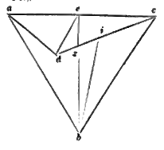


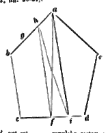

will be equal; therefore, when triangle .aed. is subtracted from triangle .aeb., and triangle .ced. from triangle .ceb., triangles .abd. and .cdb. will remain equal to one another, as I said before. But let straight line .eb. not pass through point .d.; it will cut therefore one of the sides .ad. or .cd.: let it indeed cut side .cd. at point .z.; and let straight line .ed. be joined; and let .dz. lie to .zi. as .bz. to .ze.; and let straight line .bi. be joined. I say indeed that quadrilateral .abcd. is divided into two equal parts by line .bi.; which is proved thus. Since triangles .ezd. and .biz. around equal angles, namely those at .z., have reciprocal sides, that is, they are of mutual ratio, those triangles themselves are equal to one another. For as .bz. is to .ze., so is .dz. to .zi. Let triangle .cez. be adjoined in common, the two triangles .cez. and .biz. will be equal to triangle .ecd.; but to triangle .ecd. triangle .aed. is equal; therefore triangles .cez. and .izb. are equal to triangle .ead.: for triangles .eab. and .ebc. are also equal to one another: wherefore if from equals equals are taken away, those things which remain will be equal; let triangle .ead. indeed be taken away from triangle .eab., and from triangle .ebc. let triangles .cez. and .izb. be taken away, there will remain quadrilateral .abzd. and triangle .edz. equal to triangle .cib.: but to triangle .edz. triangle .biz. is equal; wherefore quadrilateral .abid. is equal to triangle .cbi., as I said before.
Here begins the division of figures of many sides.
If you desire to cut an equilateral and equiangular pentagon into two equal parts from any given angle, draw a line from that angle to the midpoint of the side opposite to it. For example: let there be a given equilateral and equiangular pentagon .abcde.; and let the given angle be .a.; upon the midpoint indeed of side .cd. draw line .af. I say that pentagon .abcde. is divided into two equal parts by line .af.; which is proved thus: I will join straight lines .ac. and .ad., and triangles .abc. and .aed. will be equal and equiangular to one another. For triangles .afc. and .afd. are also equal; wherefore quadrilateral .abcf. is equal to quadrilateral .aedf.: therefore pentagon .abcde. is divided from the given angle .a. by line .af.; which it was necessary to do. From this, therefore, it is manifest that when in an equilateral and equiangular pentagon a line is directed upon the midpoint of any side to the angle opposite that side, that line itself will divide the pentagon into two equal parts. And if you wish to divide the same pentagon into two equal parts from a point .g. given upon side .ab., consider whether point .g. be in the middle of side .ab.; because then a straight line will have to be drawn from the given point .g. to angle .d.; and straight line .gd. will be dividing pentagon .abcde. into two equal parts. And if the given point be between points .a. and .g., let which be .h., as is seen in the second figure; then I will divide the pentagon by line .af. into two equal parts, and I will join straight line .hf., to which I will draw parallel line .ai.; and I will join straight line .hi., which divides pentagon .abcde. into two equal parts; which is proved thus. Since triangles .hfa. and .hfi. are between two parallels and upon the same base .hf., therefore they are equal to one another: if quadrilateral .hbcf. be added in common, quadrilateral .hbci. will be equal to quadrilateral .abcf.: but quadrilateral .abcf. is half of pentagon .abcde.; wherefore quadrilateral .hbci. will also be half of pentagon .abcde. But let the given pentagon not be equilateral and equiangular, as pentagon .abgde.; and I wish to divide it into two equal parts; I will produce straight line .eg.; and upon the midpoint of it I will place point .z., from which I will divide quadrilateral .abge. into two equal parts by line .zi.; and I will join straight line .zd., which also divides triangle .egd. into two equal parts: straight line .zd. indeed is either
f. 0151 · p. 144
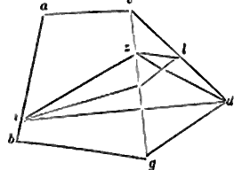

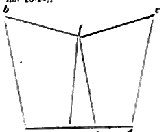

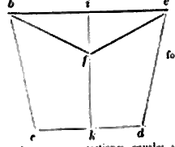

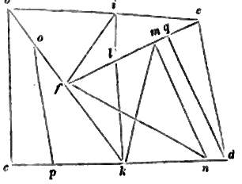
in a straight line with straight line .zi., or not: first let one of them be in a straight line with the other, as is seen in this third figure: and it will be manifest that line .id. will divide pentagon .abgde. into two equal parts: which also if you wish to divide the pentagon itself from a point .t. given upon straight line .ab., I will join straight line .td.; and I will place straight line .ik. parallel to it, and .tk. will be joined; which will also divide the same pentagon into two equal parts: the demonstration is the same as above. But let straight line .zd. not be in a straight line with .zi.; I will join indeed straight line .id.; and I will place straight line .zl. parallel to it; and I will join straight line .il.; which will also divide pentagon .abgde. into two equal parts. Proof. Straight lines .iz. and .zd. indeed divide pentagon .abgde. into two equal portions: and triangles .idz. and .idl. are equal to one another: to which if quadrilateral .ibgd. is added, pentagon .ibgdl. will be equal to pentagon .ibgdz., that is, half of pentagon .abgde., as is fitting: and thus according to this method we can bring the division upon every side of the pentagon, and from any given point upon it; and likewise we shall be able to divide into more parts by means of the things that have been said. For if we divide straight line .eg. into three equal parts, and through the points of the sections divide quadrilateral .abge. and triangle .egd. into equal parts, and thereafter proceed in the demonstrated order, we shall have what is desired. And if the pentagon has the form of a mitre, as pentagon .bcdef., we shall draw line .fa. at right angles upon side .cd.; and I will investigate the area of quadrilateral .bcaf., and likewise of quadrilateral .fade.: which if I find to be equal, pentagon .bcdef. will indeed be divided into two equal parts by line .af. But if their areas be unequal, let the greater of them be the area of quadrilateral .ae. according to the quantity of number .g.; and I will make the rectangle of .fa. by .az. equal to number .g.; and I will join straight line .fz.; and the area of triangle .faz. will be the quantity of half of number .g.: wherefore line .fz. divides pentagon .bcdef. into two equal quadrilaterals, which are .bczf. and .fzde.; and this is done according to the common method. But if we wish to operate this geometrically, we shall join .be., and divide .be. into two equal parts at point .i., as is seen in this other figure: and we shall divide quadrilateral .bcde. into two equal parts by line .ik.; which if it passes through point .f., pentagon .bcdef. is divided into two equal parts by line .fk.; because if from quadrilateral .bcki. we take away triangle .bif.; and from quadrilateral .ikde. we take away triangle .ief., quadrilaterals .fc. and .fd. will remain equal to one another.
And if straight line .ik. cuts side .ef. at point .l., as is seen in this last figure. I will place .ml. to .lf. as .il. to .lk.; and I will join straight line .km., which will divide pentagon .bcdef. into two equal sections, of which one will be quadrilateral .mkde., and the other pentagon .bckmf.: proof: I will join straight line .if., and triangles .ifl. and .kml. will be equal to one another, since the ratio .ml. to .fl. is as .il. to .lk.: wherefore triangle .ife. is equal to triangles .ile. and .klm.: for to triangle .ief. triangle .bif. is also equal; wherefore triangle .bif. is equal to triangles .iel. and .klm.: whence if from quadrilateral .bcki. we take away triangle .bfi., and from quadrilateral .ikde. we take away triangles .ile. and .klm., there will remain quadrilateral .bckl. and triangle .ifl. equal to quadrilateral .kdem.: for triangle .klm. is equal to triangle .ilf.; wherefore pentagon .bckmf. is equal to quadrilateral .mkde., as I said before: which division we shall also bring from point .f., if we join .fk., and place line .mn. parallel to it, and join .fn.; and thus there will be
f. 0152 · p. 145
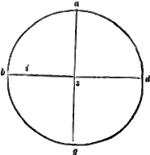

quadrilaterals .bcnf. and .fnde. equal to one another: which pentagon also if we wish to divide into three equal parts, we shall cut off from quadrilateral .bcnf. a third part with line .op.; and from quadrilateral .fnde. we shall likewise cut a third part with line .qd.; and pentagon .bcdef. will be divided into three equal parts, of which one is quadrilateral .bcpo., the second pentagon .opdqf., the third triangle .qde. And it is to be noted that if we wish to divide a hexagon, we shall divide it into two quadrilaterals by a line drawn in it, which places three of its sides on one part, and the remaining three on the other; and upon the midpoint of that line we shall place a point, from which we shall divide each quadrilateral into two equal parts; as if in hexagon .abcdef. we draw line .ad., it will divide that hexagon into two quadrilaterals, which are .abcd. and .adef.: whence if upon the midpoint of line .ae. we have placed point .g.; and from it have drawn straight lines dividing both quadrilaterals into two equal parts; and thereafter have imitated the things that were said above, we shall be able to divide the hexagon itself into two equal parts with one line; and likewise we shall be able to permute the sections from any given point upon any of its sides; and also, if we proceed according to this in the remaining figures of many sides, we shall be able most sweetly to arrive at the knowledge of their division.
Here begins the division of circles, and of their parts.
If we wish to cut any circle into two equal parts by a line drawn from a given point upon its circumference, or outside the circle, join that point with the center; and take care to lead that straight line as far as the circumference; For example: let circle .abgd. be given; and outside it let point .e. be given, and let .z. be the center of the circle; indeed, when straight line .ez. is joined and sent forth as far as point .g., straight line .ag. will be a diameter of circle .abgd. For a diameter of a circle is a straight line drawn through the center and terminated at both sides of the circumference. Straight line .ag. is indeed drawn through center .z.; therefore .ag. is a diameter; wherefore each of the portions .abg. and .adg. is a semicircle: therefore circle .abgd. is divided by a straight line drawn from point .e. given outside the circle. And if within the circle point .i. be given, I will join straight line .iz., and I will lead it in both directions to points .b. and .d.; and straight line .bd. will be a diameter of the circle, which similarly cuts circle .abgd. into two equal parts. And if we wish to divide any circle into three parts, we shall construct in it an equilateral triangle .a.b.g.; and let the center of the circle be .d.; and we shall join straight lines .da., .db., .dg., which will divide circle .abg. into three equal parts, of which one is sector .dab., the second is sector .dbg., and the third is sector .dga. For example: because straight lines .ab., .bg., .ga. are equal, arcs .ab., .bg., .ga. will be equal; because equal straight lines in equal circles subtend equal arcs. For straight lines .da., .db., .dg. from the center are equal to one another; and the angles which are at .d. are equal to one another: wherefore sections .e., .z., .i. are equal to one another: therefore circle .abg. is divided into three equal sections, as is fitting. And if you wish to divide it from the center into more parts, divide the circumference of the circle itself into as many equal parts as you wish to make parts from it; and take care to join the points of those sections with the center, and you will arrive at what is desired.
But if we wish to divide a circle into three by parallel lines, know that this cannot be done without the greatest labor; yet how this ought to be done by approximation, I will demonstrate. First I will place in circle .abg. straight line .ag., which let be the side of an equilateral triangle falling in it; wherefore circumference .ag. will be a third part of the circumference of the whole circle
f. 0153 · p. 146
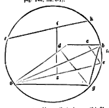

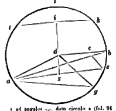


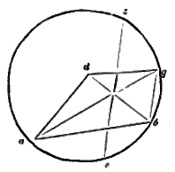
.abg.; and I will place from center .d. straight line .db. parallel to straight line .ag., and I will join straight lines .da., .dg., .ab., and .bg., and triangles .dag. and .bag. will be equal to one another: to which if the common addition be added, namely the portion of the circle contained under straight line .ag. and arc .ag., the figure contained under straight lines .ba. and .bg. and arc .ag. will be equal to sector .dag., which is a third part of the circle; wherefore the figure contained under straight lines .ba. and .bg. and arc .ag. is a third part of circle .abg.: to which let the portion of the circle contained under straight line .bg. and arc .bg. be added; the portion of the circle contained under straight line .ab. and circumference .agb. will be greater than a third part of circle .abg. by the quantity of portion .bg.: wherefore I will find the area of the portion contained under straight line .bg. and circumference .bg.; and I will divide its double by straight line .ab., and a little more than what arises from this I will subtract from circumference .bg.; and let that be arc .be.; and I will join straight line .ae., and by approximation portion .age. will be a third part of circle .abg. Then upon straight line .ae. I will draw from center .d. perpendicular .dz., and I will lead it through to .i., and let straight line .di. be equal to straight line .dz.; and through point .i. I will draw straight line .tk. parallel to straight line .ae.; and portion .tkl. will be equal to portion .abe. But the remainder, which is contained under straight lines .ae. and .tk. and arcs .ke. and .at., will be another third part; which is proved thus. I will draw from point .e. upon line .ab. perpendicular .ec.; and let it be that which arises from dividing double the area of portion .bg. by straight line .ab.; and straight line .eb. will be joined, and triangle .abe. will be equal to portion .bg. of the circle: wherefore when triangle .abe. is taken away from portion .agb. of the circle, portion .aeg. will remain a third part of circle .abg.: and because straight lines .tk. and .ae. are parallel, and are equally distant from the center, they are equal to one another. And since straight line .tk. is equal to straight line .ae., those two straight lines take away equal sections from the same circle, as is set forth in the third book of Euclid: therefore portion .tkl. is equal to portion .aeg.; wherefore section .tkl. is a third part; and the remainder indeed which is contained between parallel straight lines .tk. and .ae. and arcs .ek. and .at. will be the remaining third part, as is fitting. And so that these might be had more readily, as subtly as I could, I investigated the ratio of straight line .dz. to the semidiameter of the circle; and I found it to be by approximation as 9 to 34: whence when we wish to divide any circle into three equal parts with parallel straight lines, we shall take care to find the diameter of the circle; and when its half has been divided in the said ratio on each side of the center of the circle, and through the sections of the ratios we have drawn straight lines at right angles, we shall indeed divide the circle into three equal parts. Similarly, if we wish to divide circle .abgde. into four equal parts, I will make diameters .az. and .ge. cut at right angles upon center .c. of the circle; then I will divide semidiameter .cz. at point .k.; and let the ratio of .ck. to .cz. be as 611 to 1512: and I will place straight line .cl. equal to straight line .ck.; and through points .l. and .k. I will produce straight lines .bh. and .df. cutting diameter .az. at right angles, each of the semicircles will be divided by approximation into two equal parts. And if between two parallels from a given circle .abg., whose center let be .d., we wish to take away a given part, which let be a third, I will place straight line .ab., the side of an equilateral triangle falling in circle .abg.; and through center .d. I will place straight line .dg. parallel to it, and I will join straight line .bg.; and I will divide circumference .ab. into two equal parts at point .e., and I will draw straight line .ez. parallel to straight line .bg. I say that the figure contained under straight lines .bg. and .ez. and arcs .eb. and .gz. is a third part of circle .abg. Proof: I will draw straight lines .da. and .db. and .ag.; and triangles
f. 0154 · p. 147
.gab. and .dab. will be equal: to which when portion .abe. is added in common, the figure contained under straight lines .ga. and .gb. and arc .aeb. will be equal to sector .daeb., which is a third part of circle .abg.; therefore the figure contained under straight lines .ga. and .gb. and arc .aeb. is a third part of circle .abg.: and because straight lines .bg. and .ez. are parallel, arcs .eb. and .gz. will be equal. But to arc .eb. arc .ae. is equal; therefore arc .ae. is also equal to arc .gz.: let arc .bg. be added in common, arc .aebg. will indeed be equal to arc .ebgz.; wherefore portion .ezgb. of the circle is equal to portion .agbe. of the circle: let the portion contained under straight line .bg. and arc .gb. be taken away in common, there will remain the figure contained under straight lines .gb. and .ez. and arcs .be. and .gz. equal to the third part of the circle, namely to the figure contained under straight lines .ga. and .gb. and arc .aeb.; which was to be shown. Again I will show how any given part whatsoever is taken away from a given circle by a circle parallel to it. Let circle .abcd. be given upon center .e.; I wish to take away from circle .abcd. a given part, which let be a third, by a circle parallel to it: I will draw diameter .ag.; and I will place the square of line .ae. triple the square of line .ez.; and indeed with center .e. and distance .ez. I will describe circle .zit. I say: from the given circle .abcd. a third of it has been cut, which is circle .zit. Proof. Since straight line .ea. is half of diameter .ag., the square of diameter .ag. will be quadruple the square of line .ae.: for the same reason therefore the square of line .zt. is also quadruple the square of line .ez.; wherefore as the square of line .ea. is to the square of line .ez., so is the square of diameter .ag. to the square of diameter .tz.: but as the square of diameter .ag. is to the square of diameter .tz., so is circle .abcd. to circle .zit.: for circles are to one another as the squares of their diameters, as is demonstrated in the twelfth book of Euclid: wherefore as the square of line .ea. is to the square of line .ez., so will circle .abcd. be to circle .zit.: for the square of line .ea. is triple the square of line .ez.; wherefore circle .abcd. is triple circle .zit.; and both circles are parallel, since they have one center. Therefore its third part has been cut from circle .abcd. by circle .zit. parallel to it; which it was necessary to do.
Here begins the division of portions of circles.
If you wish to cut semicircle .abg. into two equal parts, divide straight line .ag. into two equal parts at point .d.; and from point .d. draw straight line .db. at right angles. I say that semicircle .abg. is divided into two equal parts by straight line .db. Proof: when straight lines .ba. and .bg. are produced, triangles .bdg. and .bda. will be equal to one another; for side .ad. is equal to side .dg.: and straight line .bd. lies in common; and likewise the angles at .d. are right; wherefore straight line .bg. is equal to straight line .ba.; and equal straight lines take away equal sections; wherefore section .bg. is equal to section .ba. Triangles .bdg. and .bda. are also equal; wherefore section .bdai. is equal to section .bdge.: therefore semicircle .abgd. is divided into two equal parts; which it was necessary to do. And if you wish to divide it with a straight line parallel to base .ag., divide semidiameter .bd. at point .z.: and let .dz. be to .zb. as 611 to 1512: and through point .z. draw straight line .ei., which will similarly divide semicircle .abg. into two equal parts; which are had from these things that we have said in the division of a circle into four parts. And if you wish to divide a portion of a circle, whether it be less or greater than a semicircle, into two equal parts, in like manner upon the midpoint of its chord draw the sagitta: for example: let a portion greater than a semicircle .abg. be given; and upon the midpoint of its chord sagitta .da.
f. 0155 · p. 148


draw: and portion .abd. of the circle will be equal to portion .adg.; which will be proved through the things that were said in the semicircle: and if from point .d. at right angles we draw straight line .dc. upon chord .bg., portion .bcg. of the circle, which is less than a semicircle, will indeed be divided into two equal parts. Again, if you wish to divide semicircle .abc. into three equal parts, divide straight line .bc. into two equal parts at point .d.; then divide arc .bac. into three equal parts at points .a. and .g.; and you will join straight lines .da. and .dg., which will divide semicircle .abc. into three equal sections. Proof. Since the semicircle is portion .abc., point .d. will indeed be the center of the circle, of which semicircle .abc. is half; wherefore straight lines .db., .da., .dg., .dc. are equal to one another: and because arcs .ba. and .ag. and .gc. are equal to one another, each one of the figures contained under two straight lines and the aforesaid arc will be a sector; wherefore since they are under equal straight lines and under equal arcs, it is necessary that those sectors be equal to one another: therefore the semicircle is divided into three equal sectors, which are .dab., and .dag., and .dgc.; which it was necessary to do. And if you wish to divide into two equal parts any figure contained under two straight lines and an arc of circumference, as triangle .abdg., whose two sides .ab. and .ag. are straight; and let the remaining side .bdg. be an arc of a circle. I will first join straight line .bg., and I will divide it into two equal parts at point .e., from which I will draw straight line .ae.; then upon straight line .bg., and from the given point .e. upon it, I will draw straight line .ed. at right angles. Straight lines .ae. and .ed. are either in a straight line with one another, or not: if they be in a straight line, figure .abdg. will be divided into two equal parts by line .ad., since straight line .ae. divides rectilinear triangle .abg. into two equal parts; and straight line .ed. divides portion .bdg. of the circle into two equal parts. But let straight line .ed. not be in a straight line with straight line .ea., as is seen in this other figure. I will then join straight line .ad.; and through point .e. I will draw straight line .ei. parallel to straight line .ad.; and I will join straight line .ai., which will divide the whole figure .abdg. into two equal parts. Proof. Since straight lines .ad. and .ei. are parallel, and in them are triangles .dai. and .dea., upon base .da. those triangles themselves are equal to one another: to which when the figure contained under straight lines .ab. and .ad. and arc .db. is added in common, the figure contained under straight lines .di. and .ia. and .ab. and arc .db. will be equal to the figure contained under straight lines .de. and .ea. and .ab. and arc .bd.; which figure contains half of triangle .abdg., as it was necessary to do.
Here ends the fourth distinction on the division of fields among co-heirs.